Gottlob Frege
Friedrich Ludwig Gottlob Frege (b. 1848, d. 1925) was a German mathematician, logician, and philosopher who worked at the University of Jena. Frege essentially reconceived the discipline of logic by constructing a formal system which, in effect, constituted the first ‘predicate calculus’. In this formal system, Frege developed an analysis of quantified statements and formalized the notion of a ‘proof’ in terms that are still accepted today. Frege then demonstrated that one could use his system to resolve theoretical mathematical statements in terms of simpler logical and mathematical notions. One of the axioms that Frege later added to his system, in the attempt to derive significant parts of mathematics from logic, proved to be inconsistent. Nevertheless, his definitions (e.g., of the predecessor relation and of the concept of natural number) and methods (e.g., for deriving the axioms of number theory) constituted a significant advance. To ground his views about the relationship of logic and mathematics, Frege conceived a comprehensive philosophy of language that many philosophers still find insightful, though recent scholarship suggests that Frege borrowed a significant number of elements in his philosophy of language from the Stoics. Moreover, his lifelong project, of showing that mathematics was reducible to logic, was not successful.
- 1. Frege’s Life and Influences
- 2. Frege’s Logic and Philosophy of Mathematics
- 3. Frege’s Philosophy of Language
- Bibliography
- Academic Tools
- Other Internet Resources
- Related Entries
1. Frege’s Life and Influences
According to the curriculum vitae that the 26-year old Frege filed in 1874 with his Habilitationsschrift, he was born on November 8, 1848 in Wismar, a town then in Mecklenburg-Schwerin but now in Mecklenburg-Vorpommern. His father, Alexander, a headmaster of a secondary school for girls, and his mother, Auguste (nee Bialloblotzky), brought him up in the Lutheran faith. Frege attended the local Gymnasium for 15 years, and after graduation in 1869, entered the University of Jena (see Frege 1874, translation in McGuinness (ed.) 1984, 92).
At Jena, Frege attended lectures by Ernst Karl Abbe, who subsequently became Frege’s mentor and who had a significant intellectual and personal influence on Frege’s life. Frege transferred to the University of Göttingen in 1871, and two years later, in 1873, was awarded a Ph.D. in mathematics, having written a dissertation under Ernst Schering titled Über eine geometrische Darstellung der imaginären Gebilde in der Ebene (“On a Geometrical Representation of Imaginary Forms in the Plane”). Frege explains the project in his thesis as follows: “By a geometrical representation of imaginary forms in the plane we understand accordingly a kind of correlation in virtue of which every real or imaginary element of the plane has a real, intuitive element corresponding to it” (Frege 1873, translation in McGuinness (ed.) 1984, 3). Here, by ‘imaginary forms’, Frege is referring to imaginary points, imaginary curves and lines, etc. Interestingly, one section of the thesis concerns the representation of complex numbers by magnitudes of angles in the plane.
In 1874, Frege completed his Habilitationsschrift, entitled Rechnungsmethoden, die sich auf eine Erweiterung des Grössenbegriffes gründen (“Methods of Calculation Based on an Extension of the Concept of Quantity”). Immediately after submitting this thesis, the good offices of Abbe led Frege to become a Privatdozent (Lecturer) at the University of Jena. Library records from the University of Jena establish that, over the next 5 years, Frege checked out texts in mechanics, analysis, geometry, Abelian functions, and elliptical functions (Kreiser 1984, 21).[1] No doubt, many of these texts helped him to prepare the lectures he is listed as giving by the University of Jena course bulletin, for these lectures are on topics that often match the texts, i.e., analytic geometry, elliptical and Abelian functions, algebraic analysis, functions of complex variables, etc. (Kratzsch 1979).[2]
This course of Frege’s reading and lectures during the period of 1874–1879 dovetailed quite naturally with the interests he displayed in his Habilitationsschrift. The ‘extension of the concept of quantity’ referred to in the title concerns the fact that our understanding of quantities (e.g., lengths, surfaces, etc.) has to be extended in the context of complex numbers.[3] He says, right at the beginning of this work:
According to the old conception, length appears as something material which fills the straight line between its end points and at the same time prevents another thing from penetrating into its space by its rigidity. In adding quantities, we are therefore forced to place one quantity against another. Something similar holds for surfaces and solid contents. The introduction of negative quantities made a dent in this conception, and imaginary quantities made it completely impossible. Now all that matters is the point of origin and the end point – the idea of filling the space has been completely lost. All that has remained is certain general properties of addition, which now emerge as the essential characteristic marks of quantity. The concept has thus gradually freed itself from intuition and made itself independent. This is quite unobjectionable, especially since its earlier intuitive character was at bottom mere appearance. Bounded straight lines and planes enclosed by curves can certainly be intuited, but what is quantitative about them, what is common to lengths and surfaces, escapes our intuition. … There is accordingly a noteworthy difference between geometry and arithmetic in the way in which their fundamental principles are grounded. The elements of all geometrical constructions are intuitions, and geometry refers to intuition as the source of its axioms. Since the object of arithmetic does not have an intuitive character, its fundamental propositions cannot stem from intuition… (Frege 1874, translation in McGuinness (ed.) 1984, 56)
Here we can see the beginning of two lifelong interests of Frege, namely, (1) in how concepts and definitions developed for one domain fare when applied in a wider domain, and (2) in the contrast between legitimate appeals to intuition in geometry and illegitimate appeals to intuition in the development of pure number theory. Indeed, some recent scholars have (a) shown how Frege’s work in logic was informed in part by his understanding of the analogies and disanalogies between geometry and number theory (Wilson 1992), and (b) shown that Frege was intimately familiar with the division among late 19th century mathematicians doing complex analysis who split over whether it is better to use the analytic methods of Weierstrass or the intuitive geometric methods of Riemann (Tappenden 2006). Weierstrass’s 1872 paper, describing a real-valued function that is continuous everywhere but differentiable nowhere,[4] was well known and provided an example of an ungraphable functions that places limits on intuition. Yet, at the same time, Frege clearly accepted Riemann’s practice and methods derived from taking functions as fundamental, as opposed to Weierstrass’s focus on functions that can be represented or analyzed in terms of other mathematical objects (e.g., complex power series).
In 1879, Frege published his first book Begriffsschrift, eine der arithmetischen nachgebildete Formelsprache des reinen Denkens (Concept Notation: A formula language of pure thought, modelled upon that of arithmetic) and was promoted to außerordentlicher Professor (Extraordinarius Professor) at Jena. Although the Begriffsschrift constituted a major advance in logic, it was neither widely understood nor well-received. Some scholars have suggested that this was due to the facts that the notation was 2-dimensional instead of linear and that he didn’t build upon the work of others but rather presented something radically new (e.g., Mendelsohn 2005, 2). Though our discussion below is framed primarily with an eye towards the system Frege developed in his two-volume work of 1893/1903 (Grundgesetze der Arithmetik), the principal elements of this later system can be found already in the Begriffsschrift of 1879.
Frege’s next really significant work was his second book, Die Grundlagen der Arithmetik: eine logisch mathematische Untersuchung über den Begriff der Zahl, published in 1884. Frege begins this work with criticisms of previous attempts to define the concept of number, and then offers his own analysis. The Grundlagen contains a variety of insights still discussed today, such as: (a) the claim that a statement of number (e.g., ‘there are eight planets’) is a higher-order assertion about a concept (see Section 2.5 below); (b) his famous Context Principle (“never ask for the meaning of a word in isolation, but only in the context of a proposition”), and (c) the formulation of a principle (now called ‘Hume’s Principle’ in the secondary literature) that asserts the equivalence of the claim “the number of Fs is equal to the number of Gs” with the claim that “there is a one-to-one correspondence between the objects falling under F and the objects falling under G” (see Section 2.5 below). More generally, Frege provides in the Grundlagen a non-technical philosophical justification and outline of the ideas that he was to develop technically in his two-volume work Grundgesetze der Arithmetik (1893/1903).
In the years 1891–1892, Frege gave more thought to the philosophy of language that would help ground his philosophy of mathematics. He published three of his most well-known papers, ‘Function and Concept’ (1891), ‘On Sense and Reference’ (1892a), and ‘On Concept and Object’ (1892b) in this period. These works were eventually supplemented by three other papers on the philosophy of language, from a later period, ‘The Thought’ (1918a), ‘Negation’ (1918b), and ‘Compound Thoughts’ (1923). As we shall see in Section 3.3 below, these works have to be considered in light of recent scholarship providing evidence that Frege heavily borrowed from Stoic philosophy. Though Frege always motivated and recast (often in rigorous terms) ideas that he absorbed from others, the documentation concerning the origins of many of his ideas in the Stoic corpus has to be taken seriously.
In 1893, he published the first volume of the technical work previously mentioned, Grundgesetze der Arithmetik. In 1896, he was promoted to ordentlicher Honorarprofessor (regular honorary professor). Six years later (on June 16, 1902), as he was preparing the proofs of the second volume of the Grundgesetze, he received a letter from Bertrand Russell, informing him that one could derive a contradiction in the system he had developed in the first volume. Russell’s letter frames the paradox first in terms of the predicate P = ‘being a predicate which cannot be predicated of itself’, and then in terms of the class of all those classes that are not members of themselves. Frege, in the Appendix to the second volume, rephrased the paradox in terms of his own system.
Frege never fully recovered from the fatal flaw discovered in the foundations of his Grundgesetze. His attempts at salvaging the work by restricting Basic Law V were not successful. However, he continued teaching at Jena, and from 1903–1917, he published six papers, including ‘What is a Function?’ (1904) and ‘On the Foundations of Geometry’ (Frege 1903b and 1906). In the latter, Frege criticized Hilbert’s understanding and use of the axiomatic method (see the entry on the Frege-Hilbert controversy). From this time period, we have the lecture notes that Rudolf Carnap took as a student in two of his courses (see Reck and Awodey 2004). In 1917, he retired from the University of Jena.
In the last phase of his life, from 1917–1925, Frege published only the papers mentioned earlier (1918a, 1918b, 1923) and developed some unpublished fragments of philosophical works. Unfortunately, his last years saw him become more than just politically conservative – his diary for a brief period in 1924 show sympathies for fascism and anti-Semitism (see Frege 1924 [1996], translated by R. Mendelsohn). He died on July 26, 1925, in Bad Kleinen (now in Mecklenburg-Vorpommern).
2. Frege’s Logic and Philosophy of Mathematics
Frege provided a foundations for the modern discipline of logic by developing a more perspicuous method of formally representing the logic of thoughts and inferences. He did this by developing: (a) a system allowing one to study inferences formally, (b) an analysis of complex sentences and quantifier phrases that showed an underlying unity to certain classes of inferences, (c) an analysis of proof and definition, (d) a theory of extensions which, though seriously flawed, offered an intriguing picture of the foundations of mathematics, (e) an analysis of statements about number (i.e., of answers to the question ‘How many?’), (f) definitions and proofs of some of the basic axioms of number theory from a limited set of logically primitive concepts and axioms, and (g) a conception of logic as a discipline which has some compelling features. We discuss these developments in the following subsections.
2.1 The Basis of Frege’s Term Logic and Predicate Calculus
In an attempt to realize Leibniz’s ideas for a universal formal language and a rational calculus, Frege developed a formal notation for regimenting thought and reasoning. Though this notation was first outlined in his Begriffsschrift (1879), the most mature statement of Frege’s system was in his 2-volume Grundgesetze der Arithmetik (1893/1903). Frege’s two systems are best characterized as term logics, since all of the complete expressions are denoting terms. Frege analyzed ordinary predication in these systems, and so they can also be conceived as predicate calculi. A predicate calculus is a formal system (a formal language and a method of proof) in which one can represent valid inferences among predications, i.e., among statements in which properties are predicated of objects.
In this subsection, we shall examine the most basic elements of Frege’s 1893/1903 term logic and predicate calculus. These are the statements involving function applications and the simple predications which fall out as a special case.
2.1.1 The Basis of Frege’s Term Logic
In Frege’s term logic, all of the terms and well-formed formulas are denoting expressions. These include: (a) simple names of objects, like ‘\(2\)’ and ‘\(\pi\)’, (b) complex terms which denote objects, like ‘\(2^2\)’ and ‘\(3 + 1\)’, and (c) sentences (which are also complex terms). The complex terms in (b) and (c) are formed with the help of ‘incomplete expressions’ which signify functions, such as the unary squaring function ‘\((\:)^2\)’ and the binary addition function ‘\((\:) + (\:)\)’. In these functional expressions, ‘\((\:)\)’ is used as a placeholder for what Frege called the arguments of the function; the placeholder reveals that the expressions signifying function are, on Frege’s view, incomplete and stand in contrast to complete expressions such as those in (a), (b), and (c). (Though Frege thought it inappropriate to call the incomplete expressions that signify functions ‘names’, we shall sometimes do so in what follows, though the reader should be warned that Frege had reasons for not following this practice.) Thus, a mathematical expression such as ‘\(2^2\)’ denotes the result of applying the function \((\:)^2\) to the number \(2\) as argument, namely, the number \(4\). Similarly, the expression ‘\(7 + 1\)’ denotes the result of applying the binary function \(+((\:),(\:))\) to the numbers \(7\) and \(1\) as arguments, in that order.
Even the sentences of Frege’s mature logical system are (complex) denoting terms; they are terms that denote truth-values. Frege distinguished two truth-values, The True and The False, which he took to be objects. The basic sentences of Frege’s system are constructed using the expression ‘\((\:) = (\:)\)’, which signifies a binary function that maps a pair of objects x and y to The True if x is identical to y and maps x and y to The False otherwise. A sentence such as ‘\(2^2 = 4\)’ therefore denotes the truth-value The True, while the sentence ‘\(2^2 = 6\)’ denotes The False.
An important class of these identity statements are statements of the form ‘\(f(x) = y\)’, where \(f(\:)\) is any unary function (i.e., function of a single variable), \(x\) is the argument of the function, and \(f(x)\) is the value of the function for the argument \(x\). Similarly, \(f(x,y) = z\) is an identity statement involving a binary function of two variables. And so on, for functions of more than two variables.
If we replace a complete name appearing in a sentence by a placeholder, the result is an incomplete expression that signifies a special kind of function which Frege called a concept. Concepts are functions which map every argument to one of the truth-values. Thus, ‘\((\:) > 2\)’ denotes the concept being greater than \(2\), which maps every object greater than \(2\) to The True and maps every other object to The False. Similarly, ‘\((\:)^2 = 4\)’ denotes the concept that which when squared is identical to \(4\). Frege would say that any object that a concept maps to The True falls under the concept. Thus, the number \(2\) falls under the concept that which when squared is identical to \(4\). In what follows, we use lower-case expressions like \(f(\:)\) to talk generally about functions, and upper-case expressions like \(F(\:)\) to talk more specifically about those functions which are concepts.
Frege supposed that a mathematical claim such as ‘\(2\) is prime’ should be formally represented as ‘\(P(2)\)’. The verb phrase ‘is prime’ is thereby analyzed as denoting the concept \(P(\:)\) which maps primes to The True and everything else to The False. Thus, a simple predication like ‘\(2\) is prime’ becomes analyzed in Frege’s system as a special case of functional application.
2.1.2 The Predicate Calculus Within Frege’s Term Logic
The preceding analysis of simple mathematical predications led Frege to extend the applicability of this system to the representation of non-mathematical thoughts and predications. This move formed the basis of the modern predicate calculus. Frege analyzed a non-mathematical predicate like ‘is happy’ as signifying a function of one variable which maps its arguments to a truth-value. Thus, ‘is happy’ denotes a concept which can be represented in the formal system as ‘\(H(\:)\)’. \(H(\:)\) maps those arguments which are happy to The True, and maps everything else to The False. The sentence ‘John is happy’, represented as ‘\(H(j)\)’, is thereby analyzed as: the object denoted by ‘John’ falls under the concept signified by ‘\((\:)\) is happy’. Thus, a simple predication is analyzed in terms of falling under a concept, which in turn, is analyzed in terms of functions which map their arguments to truth values. By contrast, in the modern predicate calculus, this last step of analyzing predication in terms of functions is not assumed; predication is seen as more fundamental than functional application. The sentence ‘John is happy’ is formally represented as ‘\(Hj\)’, where this is a basic form of predication (‘the object \(j\) instantiates or exemplifies the property \(H\)’). In the modern predicate calculus, functional application is analyzable in terms of predication, as we shall soon see.
In Frege’s analysis, the verb phrase ‘loves’ signifies a binary function of two variables: \(L((\:),(\:))\). This function takes a pair of arguments \(x\) and \(y\) and maps them to The True if \(x\) loves \(y\) and maps all other pairs of arguments to The False. Although it is a descendent of Frege’s system, the modern predicate calculus analyzes loves as a two-place relation (written: \(Lxy\)) rather than a function; some objects stand in the relation and others do not. The difference between Frege’s understanding of predication and the one manifested by the modern predicate calculus is simply this: in the modern predicate calculus, relations are taken as basic, and functions are defined as a special case of relation, namely, those relations \(R\) such that for any objects \(x\), \(y\), and \(z\), if \(Rxy\) and \(Rxz\), then \(y=z\). By contrast, Frege took functions to be more basic than relations. His logic is based on functional application rather than predication; a binary relation is analyzed as a binary function that maps a pair of arguments to a truth-value. Thus, a 3-place relation like gives would be analyzed in Frege’s logic as a function that maps arguments \(x\), \(y\), and \(z\) to an appropriate truth-value depending on whether \(x\) gives \(y\) to \(z\); the 4-place relation buys would be analyzed as a function that maps the arguments \(x\), \(y\), \(z\), and \(u\) to an appropriate truth-value depending on whether \(x\) buys \(y\) from \(z\) for amount \(u\); etc.
2.2 Complex Statements and Generality
So far, we have been discussing Frege’s analysis of ‘atomic’ statements. To complete the basic logical representation of thoughts, Frege added notation for representing more complex statements (such as negated and conditional statements) and statements of generality (those involving the expressions ‘every’ and ‘some’). Though we no longer use his notation for representing complex and general statements, it is important to see how the notation in Frege’s term logic already contained all the expressive power of the modern predicate calculus.
There are four special functional expressions which are used in Frege’s system to express complex and general statements:
| Intuitive Significance | Functional Expression | The Function It Signifies |
| Statement | 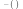 | The function which maps The True to The True and maps all other objects to The False; used to express the thought that the argument of the function is a true statement. |
| Negation | 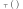 | The function which maps The True to The False and maps all other objects to The True |
| Conditional | 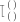 | The function which maps a pair of objects to The False if the first (i.e., named in the bottom branch) is The True and the second isn’t The True, and maps all other pairs of objects to The True |
| Generality | 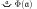 | The second-level function which maps a first-level concept Φ to The True if Φ maps every object to The True; otherwise it maps Φ to The False. |
The best way to understand this notation is by way of some tables, which show some specific examples of statements and how those are rendered in Frege’s notation and in the modern predicate calculus.
2.2.1 Truth-functional Connectives
The first table shows how Frege’s logic can express the truth-functional connectives such as not, if-then, and, or, and if-and-only-if.
| Example | Frege’s Notation |
Modern Notation |
| John is happy | 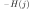 | \(Hj\) |
| It is not the case that John is happy | 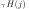 | \(\neg Hj\) |
| If the sun is shining, then John is happy | \(Ss \to Hj\) | |
| The sun is shining and John is happy | 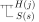 | \(Ss \amp Hj\) |
| Either the sun is shining or John is happy | 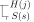 | \(Ss \lor Hj\) |
| The sun is shining if and only if John is happy | 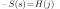 | \(Ss \equiv Hj\) |
As one can see, Frege didn’t use the primitive connectives ‘and’, ‘or’, or ‘if and only if’, but always used canonical equivalent forms defined in terms of negations and conditionals. Note the last row of the table — when Frege wants to assert that two conditions are materially equivalent, he uses the identity sign, since this says that they denote the same truth-value. In the modern sentential calculus, the biconditional does something equivalent, for a statement of the form \(\phi \equiv \psi\) is true whenever \(\phi\) and \(\psi\) are both true or both false. The only difference is, in the modern sentential calculus \(\phi\) and \(\psi\) are not construed as terms denoting truth-values, but rather as sentences having truth conditions. Of course, Frege could, in his notation, use the sentence ‘\((\phi \to \psi) \amp (\psi \to \phi)\)’ to assert \(\phi \equiv \psi\).
2.2.2 Quantified Statements
The table below compares statements of generality in Frege’s notation and in the modern predicate calculus. Frege used a special typeface (Gothic) for variables in general statements.
| Example | Frege Notation |
Modern Notation |
| Everything is mortal | \(\forall xMx\) | |
| Something is mortal | 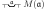 | \(\neg \forall x\neg Mx\) i.e., \(\exists xMx\) |
| Nothing is mortal | 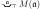 | \(\forall x \neg Mx\) i.e., \(\neg \exists xMx\) |
| Every person is mortal | 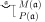 | \(\forall x(Px \to Mx)\) |
| Some person is mortal | 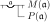 | \(\neg\forall x(Px \to \neg Mx)\) i.e., \(\exists x(Px \amp Mx)\) |
| No person is mortal | 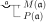 | \(\forall x(Px \to \neg Mx)\) i.e., \(\neg \exists x(Px \amp Mx)\) |
| All and only persons are mortal | 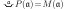 | \(\forall x(Px \equiv Mx)\) |
Note the last line. Here again, Frege uses the identity sign to help state the material equivalence of two concepts. He can do this because materially equivalent concepts \(F\) and \(G\) are such that \(F\) maps an object \(x\) to The True whenever \(G\) maps \(x\) to The True; i.e., for all arguments \(x\), \(F\) and \(G\) map \(x\) to the same truth-value.
In the modern predicate calculus, the symbols ‘\(\forall\)’ (‘every’) and ‘\(\exists\)’ (‘some’) are called the ‘universal’ and ‘existential’ quantifier, respectively, and the variable ‘\(x\)’ in the sentence ‘\(\forall xMx\)’ is called a ‘quantified variable’, or ‘variable bound by the quantifier’. We will follow this practice of calling statements involving one of these quantifier phrases ‘quantified statements’. As one can see from the table above, Frege didn’t use an existential quantifier. He was aware that a statement of the form ‘\(\exists x\phi \)’ could always be defined as ‘\(\neg \forall x \neg \phi\)’, where \(\phi\) is any formula.
It is important to mention here that the predicate calculus formulable in Frege’s logic is a ‘second-order’ predicate calculus. This means it allows quantification over functions as well as quantification over objects; i.e., statements of the form ‘Every function \(f\) is such that …’ and ‘Some function \(f\) is such that …’ are allowed. Thus, the statement ‘objects a and b fall under the same concepts’ would be written as follows in Frege’ notation:
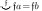
and in the modern second-order predicate calculus, we write this as:
\(\forall F (Fa \equiv Fb) \)
Readers interested in learning more about Frege’s notation can consult Beaney (1997, Appendix 2), Furth (1967), Reck & Awodey (2004, 26–34), and Cook (2013). In what follows, however, we shall continue to use the notation of the modern predicate calculus instead of Frege’s notation. In particular, we adopt the following conventions:
- We shall often use ‘\(Fx\)’ instead of ‘\(F(x)\)’ to represent the fact that \(x\) falls under the concept \(F\); we use ‘\(Rxy\)’ instead of ‘\(R(x,y)\)’ to represent the fact that \(x\) stands in the relation \(R\) to \(y\); etc.
- Instead of using expressions with placeholders, such as ‘\((\:) = (\:)\)’ and ‘\(P(\:)\)’, to signify functions and concepts, we shall simply use ‘\(=\)’ and ‘\(P\)’.
- When one replaces one of the complete names in a sentence by a variable, the resulting expression will be called an open sentence or an open formula. Thus, whereas ‘\(3 < 2\)’ is a sentence, ‘\(3 < x\)’ is an open sentence; and whereas ‘\(Hj\)’ is a formal sentence that might be used to represent ‘John is happy’, the expression ‘\(Hx\)’ is an open formula which might be rendered ‘\(x\) is happy’ in natural language.
- Finally, we shall on occasion employ the Greek symbol \(\phi\) as a metavariable ranging over formal sentences, which may or may not be open. Thus, ‘\(\phi (a)\)’ will be used to indicate any sentence (simple or complex) in which the name ‘\(a\)’ appears; ‘\(\phi(a)\)’ is not to be understood as Frege-notation for a function \(\phi\) applied to argument \(a\). Similarly, ‘\(\phi(x)\)’ will be used to indicate an open sentence in which the variable \(x\) may or may not be free, not a function of \(x\).
2.2.3 Frege’s Logic of Quantification
Frege’s functional analysis of predication coupled with his understanding of generality freed him from the limitations of the ‘subject-predicate’ analysis of ordinary language sentences that formed the basis of Aristotelian logic and it made it possible for him to develop a more general treatment of inferences involving ‘every’ and ‘some’. In traditional Aristotelian logic, the subject of a sentence and the direct object of a verb are not on a logical par. The rules governing the inferences between statements with different but related subject terms are different from the rules governing the inferences between statements with different but related verb complements. For example, in Aristotelian logic, the rule which permits the valid inference from ‘John loves Mary’ to ‘Something loves Mary’ is different from the rule which permits the valid inference from ‘John loves Mary’ to ‘John loves something’. The rule governing the first inference is a rule which applies only to subject terms whereas the rule governing the second inference governs reasoning within the predicate, and thus applies only to the transitive verb complements (i.e., direct objects). In Aristotelian logic, these inferences have nothing in common.
In Frege’s logic, however, a single rule governs both the inference from ‘John loves Mary’ to ‘Something loves Mary’ and the inference from ‘John loves Mary’ to ‘John loves something’. That’s because the subject John and the direct object Mary are both considered on a logical par, as arguments of the function loves. In effect, Frege saw no logical difference between the subject ‘John’ and the direct object ‘Mary’. What is logically important is that ‘loves’ denotes a function of two arguments. No matter whether the quantified expression ‘something’ appears as subject (‘Something loves Mary’) or within a predicate (‘John loves something’), it is to be resolved in the same way. In effect, Frege treated these quantified expressions as variable-binding operators. The variable-binding operator ‘some \(x\) is such that’ can bind the variable ‘\(x\)’ in the open sentence ‘\(x\) loves Mary’ as well as the variable ‘\(x\)’ in the open sentence ‘John loves \(x\)’. Thus, Frege analyzed the above inferences in the following general way:
- John loves Mary. Therefore, some \(x\) is such that \(x\) loves Mary.
- John loves Mary. Therefore, some \(x\) is such that John loves \(x\).
Both inferences are instances of a single valid inference rule. To see this more clearly, here are the formal representations of the above informal arguments:
- \(Ljm\) ∴ \(\exists x (Lxm)\)
- \(Ljm\) ∴ \(\exists x (Ljx)\)
The logical axiom which licenses both inferences has the form:
\(Ra_1 \ldots a_i \ldots a_n \to \exists x(Ra_1 \ldots x \ldots a_n)\),
where \(R\) is a relation that can take \(n\) arguments, \(a_1, \ldots , a_n\) are any constants (names), and \(1 \leq i \leq n\). This logical axiom tells us that from a simple predication involving an \(n\)-place relation, one can existentially generalize on any argument, and validly derive a existential statement.
Indeed, this axiom can be made even more general. If \(\phi (a)\) is any statement (formula) in which a constant (name) \(a\) appears, and \(\phi (x)\) is the result of replacing one or more occurrences of \(a\) by \(x\), then the following is a logical axiom:
\(\phi (a) \to \exists x \phi (x)\)
The inferences which start with the premise ‘John loves Mary’, displayed above, both appeal to this axiom for justification. This axiom is actually derivable as a theorem from Frege’s Basic Law IIa (1893, §47). Basic Law IIa is formulated as \(\forall x\phi (x) \to \phi (a)\), where \(\phi(a)\) is the result of substituting \(a\) for one or more variables \(x\) bound by the quantifier (though see below for a more careful discussion of this axiom). So the axiom displayed above for the existential quantifier can be derived from IIa using the rules governing conditionals, negation, and the definition of \(\exists x\phi\) discussed above.
There is one other consequence of Frege’s logic of quantification that should be mentioned. Frege took claims of the form \(\exists x\phi\) to be existence claims. He suggested that existence is not a concept under which objects fall but rather a second-level concept under which first-level concepts fall. A concept \(F\) falls under this second-level concept just in case \(F\) maps at least one object to The True. So the claim ‘Martians don’t exist’ is analyzed as an assertion about the concept martian, namely, that nothing falls under it. Frege therefore took existence to be that second-level concept which maps a first-level concept \(F\) to The True just in case \(\exists xFx\). Some philosophers have thought that this analysis validates Kant’s view that existence is not a (real) predicate.
2.3 Proof and Definition
2.3.1 Proof
Frege’s system (i.e., his term logic/predicate calculus) consisted of a language and an apparatus for proving statements. The latter consisted of a set of logical axioms (statements considered to be truths of logic) and a set of rules of inference that lay out the conditions under which certain statements of the language may be correctly inferred from others. Frege made a point of showing how every step in a proof of a proposition was justified either in terms of one of the axioms or in terms of one of the rules of inference or justified by a theorem or derived rule that had already been proved.
Thus, as part of his formal system, Frege developed a strict understanding of a ‘proof’. In essence, he defined a proof to be any finite sequence of statements such that each statement in the sequence either is an axiom or follows from previous members by a valid rule of inference. Thus, a proof of a theorem of logic, say φ, is therefore any finite sequence of statements (with φ the final statement in the sequence) such that each member of the sequence: (a) is one of the logical axioms of the formal system, or (b) follows from previous members of the sequence by a rule of inference. These are essentially the definitions that logicians still use today.
2.3.2 Definition
Frege was extremely careful about the proper description and definition of logical and mathematical concepts. He developed powerful and insightful criticisms of mathematical work which did not meet his standards for clarity. For example, he criticized mathematicians who defined a variable to be a number that varies rather than an expression of language which can vary as to which determinate number it may take as a value.
More importantly, however, Frege was the first to claim that a properly formed definition had to have two important metatheoretical properties. Let us call the new, defined symbol introduced in a definition the definiendum, and the term that is used to define the new term the definiens. Then Frege was the first to suggest that proper definitions have to be both eliminable (a definendum must always be replaceable by its definiens in any formula in which the former occurs) and conservative (a definition should not make it possible to prove new relationships among formulas that were formerly unprovable). Concerning one of his definitions in the Begriffsschrift (§24), Frege writes:
We can do without the notation introduced by this sentence, and hence without the sentence itself as its definition; nothing follows from the sentence that could not also be inferred without it. Our sole purpose in introducing such definitions is to bring about an extrinsic simplification by stipulating an abbreviation.
Frege later criticized those mathematicians who developed ‘piecemeal’ definitions or ‘creative’ definitions. In the Grundgesetze der Arithmetik, II (1903, Sections 56–67) Frege criticized the practice of defining a concept on a given range of objects and later redefining the concept on a wider, more inclusive range of objects. Frequently, this ‘piecemeal’ style of definition led to conflict, since the redefined concept did not always reduce to the original concept when one restricts the range to the original class of objects. In that same work (1903, Sections 139–147), Frege criticized the mathematical practice of introducing notation to name (unique) entities without first proving that there exist (unique) such entities. He pointed out that such ‘creative definitions’ were simply unjustified. Creative definitions fail to be conservative, as this was explained above.
2.4 Courses-of-Values, Extensions, and Proposed Mathematical Foundations
2.4.1 Courses-of-Values and Extensions
Frege’s ontology consisted of two fundamentally different types of entities, namely, functions and objects (1891, 1892b, 1904). Functions are in some sense ‘unsaturated’; i.e., they are the kind of thing which take objects as arguments and map those arguments to a value. This distinguishes them from objects. As we’ve seen, the domain of objects included two special objects, namely, the truth-values The True and The False.
In his work of 1893/1903, Frege attempted to expand the domain of objects by systematically associating, with each function \(f\), an object which he called the course-of-values of \(f\). The course-of-values of a function is a record of the value of the function for each argument. The principle Frege used to systematize courses-of-values is Basic Law V (1893/§20;):
The course-of-values of the concept \(f\) is identical to the course-of-values of the concept \(g\) if and only if \(f\) and \(g\) agree on the value of every argument (i.e., if and only if for every object \(x\), \(f(x) = g(x)\)).
Frege used the a Greek epsilon with a smooth breathing mark above it as part of the notation for signifying the course-of-values of the function \(f\):
\(\stackrel{,}{\varepsilon}\!\!f(\varepsilon)\)
where the first occurrence of the Greek \(\varepsilon\) (with the smooth breathing mark above it) is a ‘variable-binding operator’ which we might read as ‘the course-of-values of’. To avoid the appearance of variable clash, we may also use a Greek \(\alpha\) (also with a smooth breathing mark above) as a variable-binding operator. Using this notation, Frege formally represented Basic Law V in his system as:
Basic Law V
\( \stackrel{,}{\varepsilon}\!\!f(\varepsilon) = \, \stackrel{,}{\alpha}\!g(\alpha) \equiv \forall x(f(x) = g(x)) \)
(Actually, Frege used an identity sign instead of the biconditional as the main connective of this principle, for reasons described above.)
Frege called the course-of-values of a concept \(F\) its extension. The extension of a concept \(F\) records just those objects which \(F\) maps to The True. Thus Basic Law V applies equally well to the extensions of concepts. Let ‘\(\phi(x)\)’ be an open sentence of any complexity with the free variable \(x\) (the variable \(x\) may have more than one occurrence in \(\phi(x)\), but for simplicity, assume it has only one occurrence). Then Frege would use the expression:
\(\stackrel{,}{\varepsilon}\!\! \phi (\varepsilon)\),
where the second epsilon replaces \(x\) in \(\phi (x)\), to denote the extension of the concept \(\phi\). Where ‘\(n\)’ is the name of an object, Frege could define ‘object \(n\) is an element of the extension of the concept \(\phi\)’ in the following simple terms: ‘the concept \(\phi\) maps \(n\) to The True’, i.e., \(\phi(n)\). For example, the number \(3\) is an element of the extension of the concept odd number greater than \(2\) if and only if this concept maps \(3\) to The True.
Unfortunately, Basic Law V implies a contradiction, and this was pointed out to Frege by Bertrand Russell just as the second volume of the Grundgesetze was going to press. Russell recognized that some extensions are elements of themselves and some are not; the extension of the concept extension is an element of itself, since that concept would map its own extension to The True. The extension of the concept spoon is not an element of itself, because that concept would map its own extension to The False (since extensions aren’t spoons). But now what about the concept extension which is not an element of itself? Let \(E\) represent this concept and let \(e\) name the extension of \(E\). Is \(e\) an element of itself? Well, \(e\) is an element of itself if and only if \(E\) maps \(e\) to The True (by the definition of ‘element of’ given at the end of the previous paragraph, where \(e\) is the extension of the concept \(E\)). But \(E\) maps \(e\) to The True if and only if \(e\) is an extension which is not an element of itself, i.e., if and only if \(e\) is not an element of itself. We have thus reasoned that \(e\) is an element of itself if and only if it is not, showing the incoherency in Frege’s conception of an extension.
Further discussion of this problem can be found in the entry on Russell’s Paradox, and a more complete explanation of how the paradox arises in Frege’s system is presented in the entry on Frege’s theorem and foundations for arithmetic.
2.4.2 Proposed Foundation for Mathematics
Before he became aware of Russell’s paradox, Frege attempted to construct a logical foundation for mathematics. Using the logical system containing Basic Law V (1893/1903), he attempted to demonstrate the truth of the philosophical thesis known as logicism, i.e., the idea not only that mathematical concepts can be defined in terms of purely logical concepts but also that mathematical principles can be derived from the laws of logic alone. But given that the crucial definitions of mathematical concepts were stated in terms of extensions, the inconsistency in Basic Law V undermined Frege’s attempt to establish the thesis of logicism. Few philosophers today believe that mathematics can be reduced to logic in the way Frege had in mind. Mathematical theories such as set theory seem to require some non-logical concepts (such as set membership) which cannot be defined in terms of logical concepts, at least when axiomatized by certain powerful non-logical axioms (such as the proper axioms of Zermelo-Fraenkel set theory). Despite the fact that a contradiction invalidated a part of his system, the intricate theoretical web of definitions and proofs developed in the Grundgesetze nevertheless offered philosophical logicians an intriguing conceptual framework. The ideas of Bertrand Russell and Alfred North Whitehead in Principia Mathematica owe a huge debt to the work found in Frege’s Grundgesetze.
Despite Frege’s failure to provide a coherent systematization of the notion of an extension, we shall make use of the notion in what follows to explain Frege’s theory of numbers and analysis of number statements, without assuming Basic Law V. It suffices to use our informal understanding of the notion, though extensions can be rehabilitated in various ways, either axiomatically as in modern set theory or as in the various ways logicians have found to weaken Frege’s system. (See T. Parsons 1987, Burgess 1998, Heck 1996, Wehmeier 1999, Ferreira & Wehmeier 2002, Fine 2002, Anderson & Zalta 2004, Ferreira 2005, and Antonelli & May 2005.)
2.5 The Analysis of Statements of Number
In what has come to be regarded as a seminal treatise, Die Grundlagen der Arithmetik (1884), Frege began work on the idea of deriving some of the basic principles of arithmetic from what he thought were more fundamental logical principles and logical concepts. Philosophers today still find that work insightful. The leading idea is that a statement of number, such as ‘There are eight planets’ and ‘There are two authors of Principia Mathematica’, is really a statement about a concept. Frege realized that one and the same physical phenomena could be conceptualized in different ways, and that answers to the question ‘How many?’ only make sense once a concept \(F\) is supplied. Thus, one and the same physical entity might be conceptualized as consisting of \(1\) army, \(5\) divisions, \(20\) regiments, \(100\) companies, etc., and so the question ‘How many?’ only becomes legitimate once one supplies the concept being counted, such as army, division, regiment, or company (1884, §46).
Using this insight, Frege took true statements like ‘There are eight planets’ and ‘There are two authors of Principia Mathematica’ to be “second level” claims about the concepts planet and author of Principia Mathematica, respectively. In the second case, the second level claim asserts that the first-level concept being an author of Principia Mathematica falls under the second-level concept being a concept under which two objects fall. This sounds circular, since it looks like we have analyzed
There are two authors of Principia Mathematica,
which involves the concept two, as:
The concept being an author of Principia Mathematica falls under the concept being a concept under which two objects fall,
which also involves the concept two. But despite appearances, there is no circularity, since Frege analyzes the second-order concept being a concept under which two objects fall without appealing to the concept two. He did this by defining ‘\(F\) is a concept under which two objects fall’, in purely logical terms, as any concept \(F\) that satisfies the following condition:
There are distinct things \(x\) and \(y\) that fall under the concept \(F\) and anything else that falls under the concept \(F\) is identical to either \(x\) or \(y\).
In the notation of the modern predicate calculus, this is formalized as:
\(\exists x \exists y (x\! \neq\! y \amp Fx \amp Fy \amp \forall z(Fz \to z\! =\! x \lor z\! =\! y))\)
Note that the concept being an author of Principia Mathematica satisfies this condition, since there are distinct objects \(x\) and \(y\), namely, Bertrand Russell and Alfred North Whitehead, who authored Principia Mathematica and who are such that anything else authoring Principia Mathematica is identical to one of them. In this way, Frege analyzed a statement of number (‘there are two authors of Principia Mathematica’) as higher-order logical statements about concepts.
Frege then took his analysis one step further. He noticed that each of the conditions in the following sequence of conditions defined a class of ‘equinumerous’ concepts, where ‘F’ in each case is a variable ranging over concepts:
| Condition (0): | Nothing falls under \(F\) \(\neg \exists xFx\) |
| Condition (1): | Exactly one thing falls under \(F\) \(\exists x(Fx \amp \forall y(Fy \to y\! =\! x))\) |
| Condition (2): | Exactly two things fall under F.
\(\exists x \exists y (x\! \neq\! y \amp Fx \amp Fy \amp \forall z(Fz \to z\! =\! x \lor z\! =\! y))\) |
| Condition (3): | Exactly three things fall under F. \(\exists x \exists y \exists z (x\! \neq\! y \amp x\! \neq\! z \amp y\! \neq\! z \amp Fx \amp Fy \amp Fz \amp\ \) \(\forall w(Fw \to w\! =\! x \lor w\! =\! y \lor w\! =\! z))\) |
| etc. |
Notice that if concepts \(P\) and \(Q\) are both concepts which satisfy one of these conditions, then there is a one-to-one correspondence between the objects which fall under \(P\) and the objects which fall under \(Q\). That is, if any of the above conditions accurately describes both \(P\) and \(Q\), then every object falling under \(P\) can be paired with a unique and distinct object falling under \(Q\) and, under this pairing, every object falling under \(Q\) gets paired with some unique and distinct object falling under \(P\). (By the logician’s understanding of the phrase ‘every’, this last claim even applies to those concepts \(P\) and \(Q\) which satisfy Condition (0).) Frege would call such \(P\) and \(Q\) equinumerous concepts (1884, §72). Indeed, for each condition defined above, the concepts that satisfy the condition are all pairwise equinumerous to one another.
With this notion of equinumerosity, Frege defined ‘the number of the concept \(F\)’ to be the extension consisting of all the concepts that are equinumerous with \(F\) (1884, §68). To get started, Frege then defined Zero to be the number of the concept being non-self-identical (1884, §74). If we use the notation \(\#F\) to represent the number of the concept F, and use the \(\lambda\)-notation \([\lambda x \: \phi]\) to name the complex concept being an object x such that \(\phi\), Frege’s definition of Zero becomes:
\(0 =_\mathit{df} \#[\lambda x \: x \neq x]\)
Thus, the number 0 becomes defined as the extension of all the concepts equinumerous to the concept not being self-identical. This extension contains all the concepts that satisfy Condition (0) above, and so the number of all such concepts is 0. For example, the number of the concept being a square circle is \(0\), since nothing falls under it. Similarly, one could define the number \(1\) as the extension consisting of all the concepts that satisfy Condition (1) above, and define the number \(2\) as the extension of all the concepts that satisfy Condition (2) above, and so on. But though this would define a sequence of entities which are numbers, this procedure doesn’t actually define the concept natural number (finite number). Frege, however, had a deep idea about how to do this.
2.6 Natural Numbers
In order to define the concept of natural number, Frege first defined, for every \(2\)-place relation \(R\), the general concept ‘\(x\) is an ancestor of \(y\) in the \(R\)-series’. This new relation is called ‘the ancestral of the relation \(R\)’. The ancestral of the relation \(R\) was first defined in Frege’s Begriffsschrift (1879, §26, Proposition 76; 1884, §79). The intuitive idea is easily grasped if we consider the relation \(x\) is the father of \(y\). Suppose that \(a\) is the father of \(b\), that \(b\) is the father of \(c\), and that \(c\) is the father of \(d\). Then Frege’s definition of ‘\(x\) is an ancestor of \(y\) in the fatherhood-series’ ensures that \(a\) is an ancestor of \(b\), \(c\), and \(d\) in this series, that \(b\) is an ancestor of \(c\) and \(d\) in this series, and that \(c\) is an ancestor of \(d\) in this series.
More generally, if given a series of facts of the form \(aRb\), \(bRc\), \(cRd\), and so on, Frege showed how to define the relation \(R^*\), i.e., x is an ancestor of y in the R-series, which Frege referred to as: \(y\) follows \(x\) in the \(R\)-series. To exploit this definition in the case of natural numbers, Frege had to define both the relation \(x\) precedes \(y\) and the ancestral of this relation, namely, \(x\) is an ancestor of \(y\) in the predecessor-series. He first defined the relational concept \(x\) precedes \(y\) as follows (1884, §76):
\(x\) precedes \(y\) iff there is a concept \(F\) and an object \(z\) such that:
- \(z\) falls under \(F\),
- \(y\) is the (cardinal) number of the concept \(F\), and
- \(x\) is the (cardinal) number of the concept object falling under \(F\) other than \(z\)
If we again use the notation \(\#F\) to denote the number of \(F\)s and the \(\lambda\)-notation \([\lambda u \: \phi]\) to name the complex concept being an object \(u\) such that \(\phi\), Frege’s definition becomes:
\( \mathit{Precedes}(x,y) =_\mathit{df} \exists F \exists z (Fz \,\amp\, y\! =\! \#F \,\amp\, x\! =\! \#[\lambda u \: Fu \amp u\! \neq\! z]) \)
To see the intuitive idea behind this definition, consider how the definition is satisfied in the case of the number 1 preceding the number \(2\): there is a concept \(F\) (e.g., let \(F\) = being an author of Principia Mathematica) and an object \(z\) (e.g., let \(z\) = Alfred North Whitehead) such that:
- Whitehead falls under the concept author of Principia Mathematica,
- \(2\) is the (cardinal) number of the concept author of Principia Mathematica, and
- \(1\) is the (cardinal) number of the concept author of Principia Mathematica other than Whitehead.
Note that the last conjunct is true because there is exactly 1 object (namely, Bertrand Russell) that falls under the concept author of Principia Mathematica other than Whitehead.
Thus, Frege has a definition of precedes which applies to the ordered pairs \(\langle 0,1\rangle\), \(\langle 1,2\rangle \), \(\langle 2,3\rangle\), … . Frege then defined the ancestral of this relation, namely, \(x\) is an ancestor of \(y\) in the predecessor-series, or \(\mathit{Precedes}^*\). Though the exact definition will not be given here, we note that it has the following consequence: from the facts that \(10\) precedes \(11\) and \(11\) precedes \(12\), it follows that \(10\) precedes\(^*\) \(12\) in the predecessor-series. Note, however, that although \(10\) precedes\(^*\) \(12\), \(10\) does not precede \(12\), for the notion of precedes is that of immediately precedes. Note also that by defining the ancestral of the precedence relation, Frege had in effect defined \(x\) < \(y\) relative to the predecessor-series.
Recall that Frege defined the number \(0\) as the number of the concept being non-self-identical, and that \(0\) thereby becomes identified with the extension of all concepts which fail to be exemplified. Using this definition, Frege then defined (1884, §83) natural number as follows:
\(x\) is a number =df either \(x\! =\! 0\) or \(0\) is an ancestor of \(x\) in the predecessor-series
which we might represent formally as:
\( \mathit{Number}(x) =_\mathit{df} x\! =\! 0 ∨ \mathit{Precedes}^*(0,x)\)
In other words, a natural number is any member of the predecessor-series beginning with 0.
Using this definition as a basis, Frege later derived many important theorems of number theory. Philosophers appreciated the importance of this work only relatively recently (C. Parsons 1965, Smiley 1981, Wright 1983, and Boolos 1987, 1990, 1995). Wright 1983 in particular showed how the Dedekind/Peano axioms for number might be derived from one of the consistent principles that Frege discussed in 1884, now known as Hume’s Principle (“The number of \(F\)s is equal to the number of \(G\)s if and only if there is a one-to-one correspondence between the \(F\)s and the \(G\)s”). It was recently shown by R. Heck [1993] that, despite the logical inconsistency in the system of Frege 1893/1903, Frege himself validly derived the Dedekind/Peano axioms from Hume’s Principle. Although Frege used Basic Law V (which yields an inconsistency when added to his second-order logic) to establish Hume’s Principle, once Hume’s Principle was established, the subsequent derivations of the Dedekind/Peano axioms make no further essential appeals to Basic Law V. Following the lead of George Boolos, philosophers today call the derivation of the Dedekind/Peano Axioms from Hume’s Principle ‘Frege’s Theorem’. For a comprehensive introduction to the subtle and complex logical reasoning involved in this theorem, see the entry Frege’s theorem and foundations for arithmetic.
2.7 Frege’s Conception of Logic
Before receiving the famous letter from Bertrand Russell informing him of the inconsistency in his system, Frege thought that he had shown that arithmetic is reducible to the truths of logic. It is recognized today, however, that at best Frege showed that arithmetic is reducible to second-order logic extended only by Hume’s Principle. Some philosophers think Hume’s Principle is analytically true (i.e., true in virtue of the very meanings of its words), while others resist the claim, and there is an interesting debate on this issue in the literature (see, e.g., Boolos 1997, Wright 1999).
However, for the purposes of this introduction to Frege’s work, there are prior questions on which it is more important to focus. Whereas Frege thought that the truths of arithmetic are derivable from analytic truths of logic, Kant thought arithmetic principles are synthetic, in which case they wouldn’t be derivable from analytic truths. Their different conceptions of logic helps to explain why these two philosophers came to such different conclusions. In this section, we therefore turn to the following questions:
- How did Frege’s conception of logic differ from Kant’s?
In particular:
- What resources (or laws) did Kant and Frege both consider to be logical?
- Did Kant and Frege agree about the content and subject matter of logic?
- How did Frege’s conception of logic differ from that of later logicians?
An answer to the first question sets the stage for answering the second.
2.7.1 How Frege’s Conception of Logic Differed from Kant’s
One of the most important differences between Kant and Frege concerns the resources available to logic. Kant’s logic is limited to (a) Aristotelian term logic with a simple theory of disjunctive and hypothetical propositions, and (b) representing inclusion relations among concepts (MacFarlane 2002, 26). By contrast, Frege’s logic includes (a) a term-forming operator ε’, which allows one to form the singular term ε’ƒ(ε) from the function expression ƒ(ξ), and (b) a Rule of Substitution, which allows one to substitute complex open formulas for free second-order variables in theorems of logic but also allows one to define, and assert the existence of, complex concepts, including concepts defined in terms of quantifiers over concepts. We’ll discuss both of these resources below, but first, the discussion needs some context.
The differences concerning the resources available to logic revolve around a key issue, namely, whether the additional resources Frege assigns to logic require an appeal to non-logical constructions, specifically to a faculty of ‘intuition’, that is, an extralogical source which presents our minds with phenomena about which judgments can be formed. (Recall the discussion above about Frege’s early interest in appeals to intuition.) The debate over which resources do and do not require an appeal to intuition is an important one. Frege continued a trend started by Bolzano (1817), who eliminated the appeal to intuition in the proof of the Intermediate Value Theorem in the calculus (which in its simplest form asserts that a continuous function having both positive and negative values must cross the origin). Bolzano proved this theorem from the definition of continuity, which had recently been given in terms similar to the definition of a limit (see Coffa 1991, 27). A Kantian might simply draw a graph of a continuous function which takes values above and below the origin, and thereby ‘demonstrate’ that such a function must cross the origin. But appeal to a graph involves an appeal to intuition, and both Bolzano and Frege saw such appeals to intuition as potentially introducing logical gaps into a proof. There are reasons to be suspicious about such appeals: (1) there are functions which we can’t graph or otherwise construct for presentation to our intuitive faculty, e.g., the function \(f\) which maps rational numbers to \(0\) and irrational numbers to \(1\), or the functions noted by Weierstrass, which are everywhere continuous but nowhere differentiable; (2) once we take certain intuitive notions and formalize them in terms of explicit definitions, the formal definition might imply counterintuitive results; and (3) the rules of inference from statements to constructions and back are not always clear.
Frege dedicated himself to the idea of eliminating appeals to intuition in the proofs of the basic propositions of arithmetic. He explicitly remarked upon this fact in a number of works throughout his career (1879, Preface/5, Part III/§23; 1884, §§62, 87; 1893, §0; and 1903, Appendix). Thus, he would deny Kant’s dictum (A51 [B75]), ‘Without sensibility, no object would be given to us’, and claim instead that \(0\) and \(1\) are objects but that they ‘can’t be given to us in sensation’ (1884, 101). Frege’s view is that we can understand or grasp them as objects if we (a) define them as extensions of concepts, and (b) show that singular terms of the form ε’ƒ(ε)) can be axiomatized by an analytic proposition. (The latter was to be accomplished by Basic Law V, and so the collapse of this law in light of Russell’s paradox undermined this part of his plan for avoiding appeals to intuition.)
Moreover, philosophers have questioned whether Frege’s Rule of Substitution (Grundgesetze I, 1893, §48, item 9) also required an appeal to intuition. The Rule of Substitution allows one to substitute complex formulas for free second-order variables in logical theorems to produce new logical theorems. Boolos argued (1985, 336–338) that since Frege’s Rule of Substitution is equivalent to a Comprehension Principle for Concepts, it is extralogical in character. The Comprehension Principle for Concepts asserts \(\exists F \forall x(Fx \equiv \phi)\), provided \(\phi\) doesn’t have a free variable \(F\); the proviso blocks the instance \(\exists F\forall x(Fx \equiv \neg Fx)\), from which one can quickly derive a contradiction. Thus, the Comprehension Principle for Concepts asserts the existence of a concept corresponding to every expressible condition on objects. From Kant’s point of view, such existence claims were thought to be synthetic and in need of justification by the faculty of intuition. So, although it was one of Frege’s goals to avoid appeals to the faculty of intuition, there is a question as to whether his system of second-order logic (minus Basic Law V), which implies a principle asserting the existence of a wide range of concepts, really is limited in its scope to purely logical laws of an analytic nature.
If we now put aside their differences about logic’s resources and the appeal to intuition, there are other ways in which the Kantian and Fregean conceptions of logic differ. Both MacFarlane (2002) and Linnebo (2003) point out that one of Kant’s central views about logic is that its axioms and theorems are purely formal in nature (i.e., abstracted from all semantic content and concerned only with the forms of judgments) and are applicable across all the physical and mathematical sciences (1781 [1787], A55 [B79], A56 [B80], A70 [B95]; and 1800, 15). And Kant takes the laws of logic to be normative and prescriptive (something one can get wrong), and not just descriptive (1800, 16); they provide constitutive norms of thought (MacFarlane 2002, 35; Tolley 2008). Indeed, Linnebo takes two theses, that logic is formal and provides laws that are constitutive norms of thought, to be distinctive of Kant’s conception (Linnebo 2003, 240).
By contrast, Frege rejects the idea that logic is a purely formal enterprise (MacFarlane 2002, 29; Linnebo 2003, 243). He took logic to have its own unique subject matter, which included not only facts about concepts (concerning negation, subsumption, etc.) and identity, but also facts about relations (e.g., their properties and ancestrals). Frege (1906, 428 [1984, 338]) says:
Just as the concept point belongs to geometry, so logic, too, has its own concepts and relations; and it is only in virtue of this that it can have a content. Toward what is thus proper to it, its relation is not at all formal. No science is completely formal; but even gravitational mechanics is formal to a certain degree, in so far as optical and chemical properties are all the same to it. … To logic, for example, there belong the following: negation, identity, subsumption, subordination of concepts.
And, of course, as we’ve seen, Frege supposed that there is a domain of special logical objects (courses of values), among which he defined, and – until confronted by Russell’s paradox – took himself to have proved facts about, extensions and natural numbers (1884, 1893/1903). Logic, then, is not purely formal, from Frege’s point of view, but rather can provide substantive knowledge of concepts and objects.
There is some question, however, as to the extent to which Frege took logic to provide constitutive norms of thought. Linnebo suggests that Frege eventually rejected this idea. Though he offers various arguments for thinking that Frege moved away from the constitutivity thesis, his [Linnebo’s] main argument concerns the fact that Frege wanted to position Basic Law V as a logical claim, but that Basic Law V doesn’t seem to be a constitutive norm of thought (Linnebo 2003, 247). This is a persuasive reason, though it does make one wonder what Frege could have meant, in the second volume of Grundgesetze (§147), when he said, concerning Basic Law V:
If there are logical objects at all … then there must also be a means of apprehending, or recognizing them. This … is performed … by the fundamental law of logic that permits the transformation of an equality holding generally [\(\forall x(f(x)\! =\! g(x))\)] into an equation [ε’ƒ(ε) = α’g(α)]. [Authors note: the equations in brackets were added for the sake of clarity.]
Given Frege’s commitment to logical objects as part of the content of logic, the above passage suggests that he might have regarded the law which transformed an equality holding generally into an equation as a constitutive norm of thought.
But many Frege scholars are convinced that Frege took the laws of logic to provide constitutive norms of thought (MacFarlane 2002, Taschek 2008, Steinberger 2017). MacFarlane, in particular, argues that Kant and Frege may have agreed that one of the most important characteristics of logic is its generality, and that this generality consists in the fact that it provides normative rules and prescriptions. He notes that “[t]he generality of logic, for Frege as for Kant, is a normative generality: logic is general in the sense that it provides constitutive norms for thought as such, regardless of its subject matter” (2002, 35). So, though they may differ as to which principles are logical, there may be at least one point of reconciliation concerning how Kant and Frege conceived of logic.
2.7.2 How Frege’s Conception Differed from Later Logicians
Given the constraints of the present entry, we shall not attempt to discuss this question in any detail; instead, we present only the barest of outlines. After all, modern logicians and philosophers of logic have not yet come to agreement about the proper conception of logic. Many have a conception of logic that is yet different from both Kant’s and Frege’s, one that was, to some extent, anticipated by Bolzano, namely, that logical concepts and laws remain invariant under reinterpretation of the non-logical constants or under permutations of the domain of quantification. But since this modern conception is still a matter of debate, it may be that elements of Frege’s conception will yet play a role in our understanding of what logic is.
It is important to recognize just how much Frege took himself to be focusing on the content, as opposed to the form, of thoughts. His concern to more precisely represent the content of thoughts is stated explicitly in an 1882 lecture before Jena’s Society for Medicine and Natural Science, where he distinguished his 1879 system from Boole’s logic by saying:
I was not trying to present an abstract logic in formulas; I was trying to express contents in an exacter and more perspicuous manner than is possible in words, by using written symbols. I was trying, in fact, to create a “lingua characteristica” in the Leibnizian sense, not a mere “calculus ratiocinator”—not that I do not recognize such a deductive calculus as a necessary constituent of a Begriffsschrift. [Frege 1882, V.H. Dudman (trans.) 1968]
So Frege was not just trying to develop an abstract reasoning system for the precise derivations of theorems from axioms (see van Heijenoort 1967 for discussion). Frege was at least as interested in formalizing the content of reasoning as he was in formulating the rules for deriving a given thought from some group of thoughts. Frege would not have regarded the logical axioms of his formal systems as axiom schemata, i.e., as a metalinguistic sentence patterns whose instances (i.e., the sentences of the object language that match the pattern) are axioms (see Goldfarb 2001 for discussion). Nor would he have agreed that the logical axioms of his system were uninterpreted sentences. His unease with the modern conception of an uninterpreted formal system was expressed in his reaction to Hilbert’s Foundations of Geometry (Frege 1906, 384 [1984, 315]):
The word ‘interpretation’ is objectionable, for when properly expressed, a thought leaves no room for different interpretations. We have seen that ambiguity simply has to be rejected …
Instead, Frege thought that his logical axioms are (a) fundamental truths governing negation, conditionalization, quantification, identity, and description, and (b) principles from which other such fundamental truths could be derived. Indeed, even though Frege sometimes introduces methods for abbreviating these truths, he takes great pains to insist that these abbreviations are to be understood in terms of the full content being expressed. For example, he summarizes the law of universal instantiation (Basic Law IIa) in 1893/§47 using a formula that we would write nowadays as:
\(\forall xFx \to Fy\)
But closer inspection of §20, where this principle is first discussed, and of §17, where he introduces some notational conventions used in §20, makes it clear that the above is shorthand for:
\(\forall F \forall y(\forall xFx \to Fy)\)
This latter is a sentence; it is not a schema, nor an open formula with a free variable, nor an uninterpreted sentence. Rather it asserts something that Frege takes to be fundamental law, namely: for any property \(F\) and for any object \(y\), if everything falls under \(F\), then \(y\) falls under \(F\).
Frege’s understanding of, and attitude towards, the formulas of his formal language goes a long way towards explaining why his position, in the now famous debate with Hilbert about the status of the axioms in a formal system, is not an unreasonable one. At first glance, it looks as if Frege has mistakenly challenged Hilbert’s method of relative interpretability, whereby one can prove the consistency and independence of axiom systems by re-intepreting, and thereby reducing, them to systems assumed to be consistent. Frege’s objections about what exactly has been established by these relative consistency proofs may seem misguided to a modern ear. But since Frege and Hilbert understood the notions of consistency and independence differently, they didn’t always directly engage with the other’s ideas. Blanchette nicely shows, both in the entry on the Frege-Hilbert controversy and in her book (2012, Ch. 5), that if the notions of consistency and independence are understood Hilbert’s way, then Hilbert’s methods do establish what he says they do, but that if these notions are understood Frege’s way, they don’t. The reader should pursue these works for a more detailed explanation and nuanced discussion of the disagreement.
One can appreciate how Frege and Hilbert might have failed to engage with one another by considering a simple analogy. Consider the inference from “\(x\) had a nightmare” to “\(x\) had a dream” and ask the question, is the latter a logical consequence of the former? If one examines the inference purely formally, as Hilbert might, then the sentences have the form ‘\(Fx\)’ and ‘\(Gx\)’ and the question becomes, does \(Fx\) logically imply \(Gx\)? The answer for Hilbert would be ‘No’, because one can interpret ‘\(F\)’ and ‘\(G\)’ in such a way that the inference fails, e.g., just assign the standard meaning of ‘dream’ to ‘\(F\)’ and assign the standard meaning of ‘nightmare’ to ‘\(G\)’, i.e., interpret ‘\(F\)’ as the property having a dream and interpret ‘\(G\)’ as the property having a nightmare. This shows that, from this purely formal point of view, “\(x\) had a nightmare” doesn’t logically imply “\(x\) had a dream”. (From this purely formal viewpoint, one additionally needs the premise \(\forall y(Fy \to Gy)\) to infer \(Gx\) from \(Fx\).)
Although Frege had a formal system in which the open sentence \(Fx\) doesn’t logically imply \(Gx\), he takes logical consequence to be a relation among thoughts. He wouldn’t answer the question, of whether one thought is a logical consequence of another, solely by looking at the form of the sentences that express them, but rather by looking at the content of those sentences. Given the meaning (content) that ‘nightmare’ and ‘dream’ in fact have, “\(x\) had a dream” is a logical consequence of “\(x\) had a nightmare”, for having a nightmare, i.e., having a bad dream, logically implies having a dream. So, for Frege, this would clearly be a case of logical consequence.
This analogy might help one to see how Frege and Hilbert might differ in their approach to questions of consistency and interpretation. On Frege’s view, the consistency of a group of axioms depends on content, and if the form of these axioms, under logical analysis, sufficiently captures their content, this consistency will be inherited by their formal representations as well. Of course, in proving consistency, Hilbert was concerned primarily to determine whether an axiom system entailed a contradiction having the form \(\phi \amp \neg \phi\). So, given this formal goal, Hilbert’s methods are useful and immune to criticism.
But this brings us to one final issue that is crucial to Frege’s conception of logic, namely, the extent to which his formal representations capture the content of the claims being analyzed. This issue is relevant because Frege’s primary tool for analyzing the content of a mathematical or philosophical claim is by way of representing the content in a system that axiomatizes the fundamental concepts that are needed for the analysis. This issue is the subject of the first half of Blanchette 2012. To see what is at stake, we vary the example from the one used in Blanchette 2012 (24). Frege would represent the arithmetical law:
No (natural) number precedes zero
in the first instance, as:
\( \neg \exists x(\mathit{Number}(x) \amp \mathit{Precedes}(x,0)) \)
Then if we substitute Frege’s definitions of \(\mathit{Number}(x)\), \(\mathit{Precedes}(x,y)\), and \(0\), as described in Sections 2.5 and 2.6 above, his representation of the arithmetical law becomes:
\(\neg \exists x((x\! =\! 0 \lor \mathit{Precedes}^*(0,x)) \amp \\ \ \ \ \exists F \exists z(Fz \amp 0\! =\! \#F \amp x\! =\! \#[\lambda u \: Fu \amp u \! \neq\! z])) \)
Though the formal representation could be taken further, if we expand the definitions of \(\mathit{Precedes}^*\), \(\#F\), and \(\#[\lambda u \: Fu \amp u \!\neq\! z]\), enough has been said to pose the question: why think that by deriving the formal representation from more fundamental principles, Frege has derived the arithmetic law that no natural number precedes Zero? This question is tackled in some detail in in the early part of Blanchette 2012, which investigates Frege’s understanding of conceptual analysis. Her answer (Chapter 4) is that the formal representation of the arithmetic law has to be (self-evidently) logically equivalent to a good analysis of the original. If it is, then notwithstanding Frege’s failed reduction of numbers to extensions, a derivation of the formal representation from more general logical laws of the kind represented in his system would have in fact achieved the goal of reducing arithmetic to logic. The reader is directed to her work for discussion of this important point.
3. Frege’s Philosophy of Language
While pursuing his investigations into mathematics and logic (and quite possibly, in order to ground those investigations), Frege was led to develop a philosophy of language. His philosophy of language has had just as much, if not more, impact than his contributions to logic and mathematics. However, Bobzien (2021) offers compelling documentation suggesting that significant elements of Frege’s philosophy of language were adapted from Stoic logic. In this section, therefore, we first rehearse a key element of Frege’s philosophy of language, namely, the distinction between sense and denotation. To motivate this distinction, we go through the two key puzzles Frege attempted to solve (Section 3.1) and then examine how the distinction between the sense and denotation of terms (and sentences) solve these puzzles (Section 3.2). Finally, we attempt to put Frege’s philosophy of language in context (Section 3.3), in light of new research arguing for the significant influence that (discussions of) Stoic texts had on his ideas.
3.1 Frege’s Puzzles
Frege’s seminal paper in the philosophy of language is ‘Über Sinn und Bedeutung’ (‘On Sense and Reference’, 1892a). In this paper, Frege considered two puzzles about language and noticed, in each case, that one cannot account for the meaningfulness or logical behavior of certain sentences simply on the basis of the denotations of the terms (names and descriptions) in the sentence. One puzzle concerned identity statements and the other concerned sentences with subordinate clauses such as propositional attitude reports. To solve these puzzles, Frege suggested that the terms of a language have both a sense and a denotation, i.e., that at least two semantic relations are required to explain the significance or meaning of the terms of a language. This idea has inspired research in the field for over a century and we discuss it in what follows. (See Heck and May 2006 for further discussion of Frege’s contribution to the philosophy of language.)
3.1.1 Frege’s Puzzle About Identity Statements
Here are some examples of identity statements:
\(117+136 = 253\).
The morning star is identical to the evening star.
Mark Twain is Samuel Clemens.
Bill is Debbie’s father.
Frege believed that these statements all have the form ‘\(a=b\)’, where ‘\(a\)’ and ‘\(b\)’ are either names or descriptions that denote individuals. He naturally assumed that a sentence of the form ‘\(a=b\)’ is true if and only if the object \(a\) just is (identical to) the object \(b\). For example, the sentence ‘\(117+136 = 253\)’ is true if and only if the number \(117+136\) just is the number \(253\). And the statement ‘Mark Twain is Samuel Clemens’ is true if and only if the person Mark Twain just is the person Samuel Clemens.
But Frege noticed (1892a) that this account of truth can’t be all there is to the meaning of identity statements. The statement ‘\(a=a\)’ has a cognitive significance (or meaning) that must be different from the cognitive significance of ‘\(a=b\)’. We can learn that ‘Mark Twain = Mark Twain’ is true simply by inspecting it; but we can’t learn the truth of ‘Mark Twain = Samuel Clemens’ simply by inspecting it — you have to examine the world to see whether the two persons are the same. Similarly, whereas you can learn that ‘\(117+136 = 117+136\)’ and ‘the morning star is identical to the morning star’ are true simply by inspection, you can’t learn the truth of ‘\(117+136 = 253\)’ and ‘the morning star is identical to the evening star’ simply by inspection. In the latter cases, you have to do some arithmetical work or astronomical investigation to learn the truth of these identity claims. Now the problem becomes clear: the meaning of ‘\(a=a\)’ clearly differs from the meaning of ‘\(a=b\)’, but given the account of the truth described in the previous paragraph, these two identity statements appear to have the same meaning whenever they are true! For example, ‘Mark Twain = Mark Twain’ is true just in case: the person Mark Twain is identical with the person Mark Twain. And ‘Mark Twain = Samuel Clemens’ is true just in case: the person Mark Twain is identical with the person Samuel Clemens. But given that Mark Twain just is Samuel Clemens, these two cases are the same case, and that doesn’t explain the difference in meaning between the two identity sentences. And something similar applies to all the other examples of identity statements having the forms ‘\(a=a\)’ and ‘\(a=b\)’.
So the puzzle Frege discovered is: how do we account for the difference in cognitive significance between ‘\(a=b\)’ and ‘\(a=a\)’ when they are true?
3.1.2 Frege’s Puzzle About Propositional Attitude Reports
Frege is generally credited with identifying the following puzzle about propositional attitude reports, even though he didn’t quite describe the puzzle in the terms used below. A propositional attitude is a psychological relation between a person and a proposition. Belief, desire, intention, discovery, knowledge, etc., are all psychological relationships between persons, on the one hand, and propositions, on the other. When we report the propositional attitudes of others, these reports all have a similar logical form:
\(x\) believes that \(p\)
\(x\) desires that \(p\)
\(x\) intends that \(p\)
\(x\) discovered that \(p\)
\(x\) knows that \(p\)
If we replace the variable ‘\(x\)’ by the name of a person and replace the variable ‘\(p\)’ with a sentence that describes the propositional object of their attitude, we get specific attitude reports. So by replacing ‘\(x\)’ by ‘John’ and ‘\(p\)’ by ‘Mark Twain wrote Huckleberry Finn’ in the first example, the result would be the following specific belief report:
John believes that Mark Twain wrote Huckleberry Finn.
To see the problem posed by the analysis of propositional attitude reports, consider what appears to be a simple principle of reasoning, namely, the Principle of Identity Substitution (this is not to be confused with the Rule of Substitution discussed earlier). If a name, say \(n\), appears in a true sentence \(S\), and the identity sentence \(n=m\) is true, then the Principle of Identity Substitution tells us that the substitution of the name \(m\) for the name \(n\) in \(S\) does not affect the truth of \(S\). For example, let \(S\) be the true sentence ‘Mark Twain was an author’, let \(n\) be the name ‘Mark Twain’, and let \(m\) be the name ‘Samuel Clemens’. Then since the identity sentence ‘Mark Twain = Samuel Clemens’ is true, we can substitute ‘Samuel Clemens’ for ‘Mark Twain’ without affecting the truth of the sentence. And indeed, the resulting sentence ‘Samuel Clemens was an author’ is true. In other words, the following argument is valid:
Mark Twain was an author.
Mark Twain = Samuel Clemens.
Therefore, Samuel Clemens was an author.
Similarly, the following argument is valid.
\(4 > 3\)
\(4 = 8/2\)
Therefore, \(8/2 > 3\)
In general, then, the Principle of Identity Substitution seems to take the following form, where \(S\) is a sentence, \(n\) and \(m\) are names, and \(S(n)\) differs from \(S(m)\) only by the fact that at least one occurrence of \(m\) replaces \(n\):
From \(S(n)\) and \(n=m\), infer \(S(m)\).
This principle seems to capture the idea that if we say something true about an object, then even if we change the name by which we refer to that object, we should still be saying something true about that object.
But Frege, in effect, noticed the following counterexample to the Principle of Identity Substitution. Consider the following argument:
John believes that Mark Twain wrote Huckleberry Finn.
Mark Twain = Samuel Clemens.
Therefore, John believes that Samuel Clemens wrote Huckleberry Finn.
This argument is not valid. There are circumstances in which the premises are true and the conclusion false. We have already described such circumstances, namely, one in which John learns the name ‘Mark Twain’ by reading Huckleberry Finn but learns the name ‘Samuel Clemens’ in the context of learning about 19th century American authors (without learning that the name ‘Mark Twain’ was a pseudonym for Samuel Clemens). John may not believe that Samuel Clemens wrote Huckleberry Finn. The premises of the above argument, therefore, do not logically entail the conclusion. So the Principle of Identity Substitution appears to break down in the context of propositional attitude reports. The puzzle, then, is to say what causes the principle to fail in these contexts. Why aren’t we still saying something true about the man in question if all we have done is changed the name by which we refer to him?
3.2 Frege’s Theory of Sense and Denotation
To explain these puzzles, Frege suggested (1892a) that in addition to having a denotation, names and descriptions also express a sense.[5] The sense of an expression accounts for its cognitive significance—it is the way by which one conceives of the denotation of the term. The expressions ‘\(4\)’ and ‘\(8/2\)’ have the same denotation but express different senses, different ways of conceiving the same number. The descriptions ‘the morning star’ and ‘the evening star’ denote the same planet, namely Venus, but express different ways of conceiving of Venus and so have different senses. The name ‘Pegasus’ and the description ‘the most powerful Greek god’ both have a sense (and their senses are distinct), but neither has a denotation. However, even though the names ‘Mark Twain’ and ‘Samuel Clemens’ denote the same individual, they express different senses. (See May 2006b for a nice discussion of the question of whether Frege believed that the sense of a name varies from person to person.) Using the distinction between sense and denotation, Frege can account for the difference in cognitive significance between identity statements of the form ‘\(a=a\)’ and those of the form ‘\(a=b\)’. Since the sense of ‘\(a\)’ differs from the sense of ‘\(b\)’, the components of the sense of ‘\(a=a\)’ and the sense of ‘\(a=b\)’ are different. Frege can claim that the sense of the whole expression is different in the two cases. Since the sense of an expression accounts for its cognitive significance, Frege has an explanation of the difference in cognitive significance between ‘\(a=a\)’ and ‘\(a=b\)’, and thus a solution to the first puzzle.
Moreover, Frege proposed that when a term (name or description) follows a propositional attitude verb, it no longer denotes what it ordinarily denotes. Instead, Frege claims that in such contexts, a term denotes its ordinary sense. This explains why the Principle of Identity Substitution fails for terms following the propositional attitude verbs in propositional attitude reports. The Principle asserts that truth is preserved when we substitute one name for another having the same denotation. But, according to Frege’s theory, the names ‘Mark Twain’ and ‘Samuel Clemens’ denote different senses when they occur in the following sentences:
John believes that Mark Twain wrote Huckleberry Finn.
John believes that Samuel Clemens wrote Huckleberry Finn.
If they don’t denote the same object, then there is no reason to think that substitution of one name for another would preserve truth.
Frege developed the theory of sense and denotation into a thoroughgoing philosophy of language. This philosophy can be explained, at least in outline, by considering a simple sentence such as ‘John loves Mary’. In Frege’s view, the words ‘John’ and ‘Mary’ in this sentence are names, the expression ‘loves’ signifies a function, and, moreover, the sentence as a whole is a complex name. Each of these expressions has both a sense and a denotation. The sense and denotation of the names are basic; but sense and denotation of the sentence as a whole can be described in terms of the sense and denotation of the names and the way in which those words are arranged in the sentence alongside the expression ‘loves’. Let us refer to the denotation and sense of the words as follows:
\(d[j]\) refers to the denotation of the name ‘John’.
\(d[m]\) refers to the denotation of the name ‘Mary’.
\(d[L]\) refers to the denotation of the expression ‘loves’.
\(s[j]\) refers to the sense of the name ‘John’.
\(s[m]\) refers to the sense of the name ‘Mary’.
\(s[L]\) refers to the sense of the expression ‘loves’.
We now work toward a theoretical description of the denotation of the sentence as a whole. On Frege’s view, \(d[j]\) and \(d[m]\) are the real individuals John and Mary, respectively. \(d[L]\) is a function that maps \(d[m]\) (i.e., Mary) to the function ( ) loves Mary. This latter function serves as the denotation of the predicate ‘loves Mary’ and we can use the notation \(d[Lm]\) to refer to it semantically. Now the function \(d[Lm]\) maps \(d[j]\) (i.e., John) to the denotation of the sentence ‘John loves Mary’. Let us refer to the denotation of the sentence as \(d[jLm]\). Frege identifies the denotation of a sentence as one of the two truth values. Because \(d[Lm]\) maps objects to truth values, it is a concept. Thus, \(d[jLm]\) is the truth value The True if John falls under the concept \(d[Lm]\); otherwise it is the truth value The False. So, on Frege’s view, the sentence ‘John loves Mary’ names a truth value.[6]
The sentence ‘John loves Mary’ also expresses a sense. Its sense may be described as follows. Although Frege doesn’t appear to have explicitly said so, his work suggests that \(s[L]\) (the sense of the expression ‘loves’) is a function. This function would map \(s[m]\) (the sense of the name ‘Mary’) to the sense of the predicate ‘loves Mary’. Let us refer to the sense of ‘loves Mary’ as \(s[Lm]\). Now again, Frege’s work seems to imply that we should regard \(s[Lm]\) as a function which maps \(s[j]\) (the sense of the name ‘John’) to the sense of the whole sentence. Let us call the sense of the entire sentence \(s[jLm]\).[7] Frege calls the sense of a sentence a thought, and whereas there are only two truth values, he supposes that there are an infinite number of thoughts.
With this description of language, Frege can give a general account of the difference in the cognitive significance between identity statements of the form ‘\(a=a\)’ and ‘\(a=b\)’. The cognitive significance is not accounted for at the level of denotation. On Frege’s view, the sentences ‘\(4=8/2\)’ and ‘\(4=4\)’ both denote the same truth value. The function \((\:)=(\:)\) maps \(4\) and \(8/2\) to The True, i.e., maps \(4\) and \(4\) to The True. So \(d[4=8/2]\) is identical to \(d[4=4]\); they are both The True. However, the two sentences in question express different thoughts. That is because \(s[4]\) is different from \(s[8/2]\). So the thought \(s[4=8/2]\) is distinct from the thought \(s[4=4]\). Similarly, ‘Mark Twain = Mark Twain’ and ‘Mark Twain = Samuel Clemens’ denote the same truth value. However, given that \(s\)[Mark Twain] is distinct from \(s\)[Samuel Clemens], Frege would claim that the thought \(s\)[Mark Twain = Mark Twain] is distinct from the thought \(s\)[Mark Twain = Samuel Clemens].
Furthermore, recall that Frege proposed that terms following propositional attitude verbs denote not their ordinary denotations but rather the senses they ordinarily express. In fact, in the following propositional attitude report, not only do the words ‘Mark Twain’, ‘wrote’ and ‘Huckleberry Finn ’ denote their ordinary senses, but the entire sentence ‘Mark Twain wrote Huckleberry Finn’ also denotes its ordinary sense (namely, a thought):
John believes that Mark Twain wrote Huckleberry Finn.
Frege, therefore, would analyze this attitude report as follows: ‘believes that’ denotes a function that maps the denotation of the sentence ‘Mark Twain wrote Huckleberry Finn’ to a concept. In this case, however, the denotation of the sentence ‘Mark Twain wrote Huckleberry Finn’ is not a truth value but rather a thought. The thought it denotes is different from the thought denoted by ‘Samuel Clemens wrote Huckleberry Finn’ in the following propositional attitude report:
John believes that Samuel Clemens wrote Huckleberry Finn.
Since the thought denoted by ‘Samuel Clemens wrote Huckleberry Finn’ in this context differs from the thought denoted by ‘Mark Twain wrote Huckleberry Finn’ in the same context, the concept denoted by ‘believes that Mark Twain wrote Huckleberry Finn’ is a different concept from the one denoted by ‘believes that Samuel Clemens wrote Huckleberry Finn’. One may consistently suppose that the concept denoted by the former predicate maps John to The True whereas the concept denoted by the latter predicate does not. Frege’s analysis therefore preserves our intuition that John can believe that Mark Twain wrote Huckleberry Finn without believing that Samuel Clemens did. It also preserves the Principle of Identity Substitution—the fact that one cannot substitute ‘Samuel Clemens’ for ‘Mark Twain’ when these names occur after propositional attitude verbs does not constitute evidence against the Principle. For if Frege is right, names do not have their usual denotation when they occur in these contexts.
3.3 Frege’s Philosophy of Language in Context
In an important paper, Bobzien (2021) develops an inductively strong argument to the conclusion that Frege adopted ideas by the Stoics, as the latter were described in Carl Prantl’s four volume History of Western Logic (Geschichte der Logik im Abendland, 1855–1870) and in Diogenes Laertius’ Lives of the Philosophers (Vitae Philosophorum, 2nd century CE). The Stoic ideas described in these two works originate with Zeno of Citium, Cleanthes, Chrysippus of Soli, Diogenes of Babylon, etc., and so both works are ‘secondary’ literature. The relevant reports in Diogenes’ Lives (which are largely quoted in Prantl) are among the closest we have to the source material for Stoic writings on language and logic, while Section VI of Volume 1 of Prantl’s Geschichte is a 95-page summary of Stoic views. Bobzien notes how widely read Prantl's work was, and how Frege's training left him well-qualified to understand the many quoted passages in Greek and Latin in his work. She then compiles evidence to the conclusion that Frege borrowed heavily (and without attribution) from these works. This evidence is cumulative, for there is no smoking gun. We can't point to any dog-eared copies with marginalia in Frege’s own hand, or any copies of works by Prantl and Diogenes that can be traced to Frege’s library, or any records of Frege checking out the works by Prantl and Diogenes from the Jena University library.[8]
But in the 50-page Section III of her paper, Bobzien constructs numerous tables of comparison that place passages from the Stoic and Fregean corpora side-by-side and interlaces them with observations and careful scholarship that connect the most salient (transliterated) Greek phrases with their German counterparts. The overall effect is a kind of res ipsa loquitur – the thing speaks for itself – and places the ball squarely in the court of those who would attempt to deny the identities and similarities. The evidence doesn't challenge the insight and ingenuity that Frege brought to bear when he formalized the language and logic of mathematics (and certain constructions of natural language) in terms of the 19th century understanding of functions, and so the formal representations presented earlier in this entry were something that was not borrowed from the Stoics. And though Frege independently motivated the ideas he absorbed from the Stoics, Bobzien shows how many aspects of Frege’s underlying approach to language is directly founded on ideas from fifteen hundred years ago and so are not as new as originally thought.
It remains to get a sense of the range of the elements in common, some of which were pointed out by others in previous research.[9] At the most general level, Bobzien compares the ways that the Stoics and Frege relate semantic ‘content’ (Greek lekta v. Fregean Sinn) to the linguistic expression of that content. Both distinguish the ‘incomplete’ (ellipē v. ungesättigt) content of predicates from the complete content of sentences, and there are parallels in what the Stoics and Frege have to say about complete ‘assertible’ contents (axiōmata v. Gedanken), especially in connection with the fact that these contents are the primary bearers of truth and falsity. Bobzien then compares the two philosophies with regard to other kinds of complete contents, such as those expressed by commands, sentence questions, expressions of emotion, word questions, and indexicals. In each case, Frege’s descriptions of the content presented by these linguistic expressions closely follow those of the Stoics. Another group of similarities arises in her comparison of the doctrines regarding complex contents produced with propositional connectives, such as those expressed by sentences with negations (including contradictories, double negations, etc.), conjunctions, disjunctions, conditionals, and sentences with ‘because’. A comparison of the two approaches to quantification and universality concludes the paper.
By producing so many passages in parallel between the Stoic and Fregean corpora, the details and evidence accumulate, thereby becoming increasingly persuasive. Any student of Frege who wants to understand the full range of his views on language will have to come to grips with how those views are related to Stoic philosophy. Though Bobzien duly notes the others who had previously remarked on some of the similarities (see again footnote 9), her paper of 2021 is a good place to start, since the evidence assembled there is so comprehensive.
Bibliography
A. Primary Sources
Frege’s Complete Corpus
Chronological Catalog of Frege’s Work
Works by Frege Cited in this Entry
Two useful source books for translations of Frege’s Writings are:
- P. Geach and M. Black (eds. and trans.), 1980, Translations from the Philosophical Writings of Gottlob Frege, Oxford: Blackwell, third edition.
- B. McGuinness (ed.), 1984, Collected Papers on Mathematics, Logic, and Philosophy, Oxford: Blackwell.
Many of the works listed below are translated and collected in the above.
| 1873 | Über eine geometrische Darstellung der imaginären Gebilde in der Ebene, Inaugural-Dissertation der Philosophischen Fakultät zu Göttingen zur Erlangung der Doktorwürde, Jena: A. Neuenhann, 1873; translated by H. Kaal, On a Geometrical Representation of the Imaginary Forms in the Plane, in McGuinness (ed.) 1984, pp. 1–55. |
| 1874 | Rechnungsmethoden, die sich auf eine Erweiterung des Grössenbegriffes gründen, Dissertation zur Erlangung der Venia Docendi bei der Philosophischen Fakultät in Jena, Jena: Friedrich Frommann, 1874; translation by H. Kaal, Methods of Calculation based on an Extension of the Concept of Quantity, in McGuinness (ed.) 1984, pp. 56–92. |
| 1879 | Begriffsschrift, eine der arithmetischen nachgebildete Formelsprache des reinen Denkens, Halle a. S.: Louis Nebert; translated as Concept Script, a formal language of pure thought modelled upon that of arithmetic, by S. Bauer-Mengelberg in J. van Heijenoort (ed.), From Frege to Gödel: A Source Book in Mathematical Logic, 1879–1931, Cambridge, MA: Harvard University Press, 1967. |
| 1882 | ‘Über den Zweck der Begriffsschrift’, Jenaische Zeitschrift für Naturwissenschaft (Supplement), 16: 1–10; translated by V. Dudman as ‘On the Purpose of the Begriffsschrift’, The Australasian Journal of Philosophy, 46/2 (1968): 89–97. (Also translated in T. Bynum (ed., trans.), Conceptual Notation and Related Articles, Oxford: Clarendon, 1972.) |
| 1884 | Die Grundlagen der Arithmetik: eine logisch mathematische Untersuchung über den Begriff der Zahl, Breslau: W. Koebner; translated as The Foundations of Arithmetic: A logico-mathematical enquiry into the concept of number, by J.L. Austin, Oxford: Blackwell, second revised edition, 1953. |
| 1891 | ‘Funktion und Begriff’, Vortrag, gehalten in der Sitzung vom 9. Januar 1891 der Jenaischen Gesellschaft für Medizin und Naturwissenschaft, Jena: Hermann Pohle; translated as ‘Function and Concept’ by P. Geach in Geach and Black (eds. and trans.) 1980, 21–41. |
| 1892a | ‘Über Sinn und Bedeutung’, in Zeitschrift für Philosophie und philosophische Kritik, 100: 25–50; translated as ‘On Sense and Reference’ by M. Black in Geach and Black (eds. and trans.), 1980, 56–78. |
| 1892b | ‘Über Begriff und Gegenstand’, in Vierteljahresschrift für wissenschaftliche Philosophie, 16: 192–205; translated as ‘Concept and Object’ by P. Geach in Geach and Black (eds. and trans.) 1980, 42–55. |
| 1893/1903 | Grundgesetze der Arithmetik, Jena: Verlag Hermann Pohle, Band I/II. Complete translation by P. Ebert and M. Rossberg (with C. Wright) as Basic Laws of Arithmetic: Derived using concept-script, Oxford: Oxford University Press, 2013. Partial translation of Volume I, The Basic Laws of Arithmetic, by M. Furth, Berkeley: University of California Press, 1964. |
| 1903b | ‘Über die Grundlagen der Geometrie’, Jahresbericht der Deutschen Mathematiker-Vereinigung 12 (1903): 319–324 (Part I), 368–375 (Part II); translated ‘On the Foundations of Geometry’ (First Series), by E.-H. W. Kluge, in McGuinness (ed.) 1984, pp. 273–284. |
| 1904 | ‘Was ist eine Funktion?’, in Festschrift Ludwig Boltzmann gewidmet zum sechzigsten Geburtstage, 20. Februar 1904, S. Meyer (ed.), Leipzig: Barth, 1904, pp. 656–666; translated as ‘What is a Function?’ by P. Geach in Geach and Black (eds. and trans.) 1980, 107–116. |
| 1906 | ‘Über die Grundlagen der Geometrie’, Jahresbericht der Deutschen Mathematiker-Vereinigung 15: 293–309 (Part I), 377–403 (Part II), 423–430 (Part III); translated as ‘On the Foundations of Geometry’ (Second Series), by E.-H. W. Kluge, in On the Foundations of Geometry and Formal Theories of Arithmetic, New Haven: Yale University Press, 1971; reprinted in B. McGuinness (ed.) 1984, 293–340. |
| 1918a | ‘Der Gedanke. Eine Logische Untersuchung’, Beiträge zur Philosophie des deutschen Idealismus, I (1918–1919): 58–77; translated as ‘Thoughts’, by P. Geach and R. Stoothoff, in McGuinness (ed.) 1984, pp. 351–372. |
| 1918b | ‘Die Verneinung. Eine Logische Untersuchung’, Beiträge zur Philosophie des deutschen Idealismus, I (1919): 143–157; translated as ‘Negation’, by P. Geach and R. Stoothoff, in McGuinness (ed.), 1984, pp. 373–389. |
| 1923 | ‘Logische Untersuchungen. Dritter Teil: Gedankengefüge’, Beiträge zur Philosophie des deutschen Idealismus, III (1923–1926): 36–51; translated as ‘Compound Thoughts’, by P. Geach and R. Stoothoff, in McGuinness (ed.) 1984, pp. 390–406. |
| 1924 | [Diary], G. Gabriel and W. Kienzler (eds.), ‘Diary: Written by Professor Gottlob Frege in the Time from 10 March to 9 April 1924’, R. Mendelsohn (trans.), Inquiry, 39 (1996): 303–342. |
B. Secondary Sources
- Anderson, D., and Zalta, E., 2004, “Frege, Boolos, and Logical Objects”, Journal of Philosophical Logic, 33(1): 1–26.
- Angelelli, I., 1967, Studies on Gottlob Frege and Traditional Philosophy, Dordrecht: D. Reidel.
- Antonelli, A., and May, R., 2005, “Frege’s Other Program”, Notre Dame Journal of Formal Logic, 46(1): 1–17.
- Beaney, M., 1996, Frege: Making Sense, London: Duckworth.
- –––, 1997, The Frege Reader, Oxford: Blackwell
- Bell, D., 1979, Frege’s Theory of Judgment, Oxford: Clarendon.
- Blanchette, P., 2012, Frege’s Conception of Logic, New York: Oxford University Press.
- Bobzien, S., 2021, “Frege Plagiarized the Stoics”, in Fiona Leigh (ed.), Themes in Plato, Aristotle, and Hellenistic Philosophy: Keeling Lectures 2011–18, London: University of London Press, 2021, pp. 149–219.
- Bochenski, Joseph M., 1956, Formale Logic, Freiburg: Karl Albe; second edition, 1962.
- Bolzano, B., 1817, “Rein analytischer Beweis des Lehrsatzes”, in Early Mathematical Works (1781–1848), L. Novy (ed.), Institute of Czechoslovak and General History CSAS, Prague, 1981; translated in S. Russ (ed.), The Mathematical Works of Bernard Bolzano, Oxford: Oxford University Press.
- Boolos, G., 1985, “Reading the Begriffsschrift”, Mind, 94: 331–344; reprinted in Boolos (1998): 155–170.
- –––, 1986, “Saving Frege From Contradiction”, Proceedings of the Aristotelian Society, 87: 137–151.
- –––, 1987, “The Consistency of Frege’s Foundations of Arithmetic”, in J. Thomson (ed.), On Being and Saying, Cambridge, MA: The MIT Press, 3–20.
- –––, 1990, “The Standard of Equality of Numbers”, in G. Boolos (ed.), Meaning and Method: Essays in Honor of Hilary Putnam, Cambridge: Cambridge University Press, 261–77.
- –––, 1995, “Frege’s Theorem and the Peano Postulates”, The Bulletin of Symbolic Logic, 1: 317–26.
- –––, 1997, “Is Hume’s Principle Analytic?”, in Heck (ed.) 1997, 245–262; reprinted in Boolos 1998: 301–314.
- –––, 1998, Logic, Logic, and Logic, Cambridge, MA: Harvard University Press.
- Burgess, J., 1998, “On a Consistent Subsystem of Frege’s Grundgesetze”, Notre Dame Journal of Formal Logic, 39: 274–278.
- –––, 2005, Fixing Frege, Princeton: Princeton University Press.
- Coffa, J.A., 1991, The Semantic Tradition from Kant to Carnap, L. Wessels (ed.), Cambridge: Cambridge University Press.
- Cook, R., 2013, “How to Read Frege’s Grundgesetze”, Appendix to Volume 2 of the Ebert & Rossberg translation of Frege 1893/1903.
- Currie, G., 1982, Frege: An Introduction to His Philosophy, Brighton, Sussex: Harvester Press.
- Demopoulos, W. (ed.), 1995, Frege’s Philosophy of Mathematics, Cambridge, MA: Harvard University Press.
- Diogenes Laertius, 2nd century CE, Lives of the Philosophers (Vitae Philsophorum), 2 volumes, M. Marcovich (ed.), Stuttgart & Leipzig: Teubner, 1999.
- Dummett, M., 1973, Frege: Philosophy of Language, London: Duckworth.
- –––, 1981, The Interpretation of Frege’s Philosophy, Cambridge, MA: Harvard University Press.
- –––, 1991, Frege: Philosophy of Mathematics, Cambridge, MA: Harvard University Press.
- Ferreira, F., 2005, “Amending Frege’s Grundgesetze der Arithmetik”, Synthese, 147: 3–19.
- Ferreira, F., and K. Wehmeier, 2002, “On the Consistency of the \(\Delta^1_1\)-CA Fragment of Frege’s Grundgesetze”, Journal of Philosophical Logic, 31: 303–311.
- Fine, K., 2002, The Limits of Abstraction, Oxford: Clarendon Press.
- Furth, M., 1967, “Editor’s Introduction”, in G. Frege, The Basic Laws of Arithmetic, M. Furth (translator and editor), Berkeley: University of California Press, v–lvii
- Gabriel, G., K. Hülser, and S. Schlotter, 2009, “Zur Miete bei Frege – Rudolf Hirzel und die Rezeption der stoischen Logik und Semantik in Jena,” History and Philosophy of Logic, 30(4): 369–88.
- Goldfarb, W., 2001, “Frege’s Conception of Logic”, in J. Floyd and S. Shieh (eds.), Future Pasts: The Analytic Tradition in Twentieth-Century Philosophy, Oxford: Oxford University Press, 25–41.
- Haaparanta, L., and Hintikka, J. (eds.), 1986, Frege Synthesized, Dordrecht: D. Reidel.
- Heck, R., 1993, “The Development of Arithmetic in Frege’s Grundgesetze der Arithmetik”, Journal of Symbolic Logic, 58(2): 579–601.
- –––, 1996, “The Consistency of Predicative Fragments of Frege’s Grundgesetze der Arithmetik”, History and Philosophy of Logic, 17: 209–220.
- Heck, R., and R. May, 2006, “Frege’s Contribution to Philosophy of Language”, in E. Lepore and B. Smith (eds.), The Oxford Handbook of Philosophy of Language, Oxford: Oxford University Press.
- Heijenoort, Jean van, 1967, “Logic as Calculus and Logic as Language”, Synthese, 17: 324–30.
- Hodges, W., 2001, “Formal Features of Compositionality”, Journal of Logic, Language and Information, 10: 7–28.
- Kant, I., 1781 [1787], Kritik der reinen Vernunft, Riga: Johann Friedrich Hartknoch, 1st edition (A), 1781; 2nd edition (B), 1787; translated as Critique of Pure Reason by P. Guyer and A. Wood, Cambridge: Cambridge University Press, 1998.
- –––, 1800, Logik: ein Handbuch zu Vorlesungen, G.B. Jäsche (ed.), Königsberg: Friedrich Ricolovius; translated as Logic, by R.S. Hartman and W. Schwarz, New York: Dover Publications, 1974; translation (‘The Jasche Logic’) also by J. Michael Young, Immanuel Kant: Lectures on Logic, Cambridge: Cambridge University Press, 1992.
- Klemke, E. D. (ed.), 1968, Essays on Frege, Urbana, IL: University of Illinois Press.
- Kneale, W. and M. Kneale, 1962, The Development of Logic, Oxford: Oxford University Press.
- Kratzsch, I., 1979, “Material zu Leben und Wirken Freges aus dem Besitz der Universitäts-bibliothek Jena”, in Begriffsschrift – Jenaer Frege-Konferenz (May 7–11, 1979), Jena: Friedrich-Schiller-Universität, 534–46.
- Kreiser, L., 1984, “G. Frege ‘Die Grundlagen der Arithmetik’ – Werk und Geschichte”, in G. Wechsung (ed.), Frege Conference 1984 (Proceedings of the International Conference Held at Schwerin, GDR, September 10–14, 1984), Berlin: Akademie-Verlag, 13–27.
- –––, 1997, “Alfred,” in G. Gabriel and W. Kienzler (eds.), Frege in Jena: Beiträge zur Spurensicherung, Würzburg: Königshausen & Neumann, pp. 68–83.
- –––, 2001, Gottlob Frege: Leben, Werk, Zeit, Hamburg: Meiner.
- Linnebo, Øystein, 2003, “Frege’s Conception of Logic: From Kant to Grundgesetze”, Manuscrito, 26(2): 235–252.
- Łukasiewicz, J., 1935, “Zur Geschichte der Aussagenlogik,” Erkenntnis, 5: 111–131; this is a German translation, by the author, of his original paper, “Z historii logiki zdań,” Przegląd Filozoficzny, 37 (1934): 417–37; English translation, “On the history of the logic of propositions,” by Storrs McCall, in Polish Logic: 1920–1939, Storrs McCall (ed.), Oxford: Clarendon Press, pp. 66–87.
- MacFarlane, J., 2002, “Frege, Kant, and the Logic in Logicism”, Philosophical Review, 111(1): 25–66.
- Mates, B., 1961, Stoic Logic, Berkeley/Los Angeles: University of California Press; first edition, 1953.
- May, R., 2006a, “Frege on Indexicals”, The Philosophical Review, 115: 487–516.
- –––, 2006b, “The Invariance of Sense”, The Journal of Philosophy, 103: 111–144.
- Mendelsohn, R., 2005, The Philosophy of Gottlob Frege, Cambridge: Cambridge University Press.
- Parsons, C., 1965, “Frege’s Theory of Number”, in M. Black (ed.), Philosophy in America, Ithaca: Cornell, 180–203.
- Parsons, T., 1981, “Frege’s Hierarchies of Indirect Senses and the Paradox of Analysis”, Midwest Studies in Philosophy: VI, Minneapolis: University of Minnesota Press, 37–57.
- –––, 1982, “Fregean Theories of Fictional Objects”, Topoi, 1: 81–87.
- –––, 1987, “On the Consistency of the First-Order Portion of Frege’s Logical System”, Notre Dame Journal of Formal Logic, 28(1): 161–168.
- Pelletier, F.J., 2001, “Did Frege Believe Frege’s Principle”, Journal of Logic, Language, and Information, 10(1): 87–114.
- Perry, J., 1977, “Frege on Demonstratives”, Philosophical Review, 86: 474–497.
- Prantl, Carl, 1855–1870, “Die Stoiker” (Volume 1, Section VI), in Prantl’s 4 volume, Geschichte der Logik im Abendland, Leipzig: Verlag von S. Hirzel, pp. 401–496.
- Reck, E., and Awodey, S. (eds. and trans.), 2004, Frege’s Lectures on Logic: Carnap’s Student Notes, 1910–1914, Chicago and La Salle, IL: Open Court.
- Resnik, M., 1980, Frege and the Philosophy of Mathematics, Ithaca, NY: Cornell University Press.
- Ricketts, T., 1997, “Truth-Values and Courses-of-Value in Frege’s Grundgesetze”, in Early Analytic Philosophy, W. Tait (ed.), Chicago: Open Court, 187–211.
- –––, 1996, “Logic and Truth in Frege”, Proceedings of the Aristotelian Society (Supplementary Volume) 70: 121–140.
- Ricketts, T. and M. Potter (eds.), 2010, Cambridge Companion to Frege, Cambridge: Cambridge University Press.
- Salmon, N., 1986, Frege’s Puzzle, Cambridge, MA: MIT Press.
- Schirn, M. (ed.), 1996, Frege: Importance and Legacy, Berlin: de Gruyter.
- Sluga, H., 1980, Gottlob Frege, London: Routledge and Kegan Paul.
- ––– (ed.), 1993, The Philosophy of Frege, New York: Garland, four volumes.
- Smiley, T., 1981, “Frege and Russell”, Epistemologica, 4: 53–8.
- Steinberger, F., 2017, “Frege and Carnap on the Normativity of Logic”, Synthese, 194(1): 143–162.
- Tappenden, J., 2006, “The Riemannian Background to Frege’s Philosophy”, in The Architecture of Modern Mathematics: Essays in History and Philosophy, J. Ferreirós and J. Gray (eds.), Oxford: Oxford University Press, 97–132.
- Taschek, W., 2008, “Truth, Assertion, and the Horizontal: Frege on ‘the essence of logic’ ”, Mind, 117: 375–401.
- Tolley, C., 2008, “Kant and the normativity of logic”, in V. Rohden, R. Terra, G. de Almeida, & M. Ruffing (eds.), Recht und Frieden in der Philosophie Kants: Akten des X. Internationalen Kant-Kongresses (Volume 5), Berlin: De Gruyter, pp. 215–227.
- Veraart, Albert, 1976, “Geschichte des wissenschaftlichen Nachlasses Gottlob Freges und seiner Edition,” in M. Schirn (ed.), Studien zu Frege I, Stuttgart – Bad Cannstatt: Frommann-Holzboog, pp. 49–106. (See especially Section 5, “Zum Verbleib des übrigen Nachlasses”, pp. 82–84.)
- Wilson, M., 1992, “Frege: The Royal Road from Geometry”, Noûs, 26: 149–80; reprinted with a new Postscript in Demopoulos 1995, 108–159.
- Wehmeier, K., 1999, “Consistent Fragments of Grundgesetze and the Existence of Non-Logical Objects”, Synthese, 121: 309–328.
- Wehmeier, K., and H.-C. Schmidt am Busch, 2000 [2005], “The Quest for Frege’s Nachlass”, in Michael Beaney and Erich Reck (eds.), Critical Assessments of Leading Philosophers: Gottlob Frege (Volume I), London: Routledge, 2005, pp. 54–68; translated by the authors from “Auf der Suche nach Freges Nachlaß”, in G. Gabriel and U. Dathe (eds.), Gottlob Frege – Werk und Wirkung, Paderborn: mentis Verlag, 2000, 267–281.
- Weierstrass, K., 1872, “Über continuirliche Functionen eines reellen Arguments, die für keinen Werth des letzeren einen bestimmten Differentialquotienten besitzen,” in Mathematische Werke von Karl Weierstrass (Volume II), Berlin, Germany: Mayer & Mueller, 1895 pages 71–74; English translation: “On continuous functions of a real argument that do not possess a well-defined derivative for any value of their argument”, in G.A. Edgar, Classics on Fractals, Addison-Wesley Publishing Company, 1993, 3–9.
- Wright, C., 1983, Frege’s Conception of Numbers as Objects, Aberdeen: Aberdeen University Press.
- –––, 1999, “Is Hume’s Principle Analytic,” Notre Dame Journal of Formal Logic, 40(1): 6–30.
Academic Tools
How to cite this entry. Preview the PDF version of this entry at the Friends of the SEP Society. Look up topics and thinkers related to this entry at the Internet Philosophy Ontology Project (InPhO). Enhanced bibliography for this entry at PhilPapers, with links to its database.


Other Internet Resources
- Die Grundlagen der Arithmetik, (528 KB PDF file), original German text.
- Side-by-side translation (English)/transcription (German) of Frege’s paper Über die wissenschaftliche Berechtigung einer Begriffsschrift, translated as “On the Scientific Justification of a Concept Script,” in Borderless Philosophy, 2 (2019): 76–94.
- MacTutor History of Mathematics Archive
- Metaphysics Research Lab Web Page on Frege
- Frege, Gottlob, by Kevin Klement (U. Massachusetts/Amherst), in the Internet Encyclopedia of Philosophy.
Acknowledgments
I would like to thank Kai Wehmeier, whose careful eye as a logician and Frege scholar caught several passages where I had bent the truth past the breaking point. I’d like to thank to Emily Bender, who pointed out that I hadn’t observed the distinction between relative and subordinate clauses in discussing Frege’s analysis of belief reports. And I’d like to thank Paul Oppenheimer for making some suggestions that improved the diction and clarity in a couple of sentences, and for a suggestion for improvement to Section 3.2. I’d like to thank Wolfgang Kienzler for suggesting several important improvements to the main text and to the Chronological Catalog of Frege’s Work. I’d like to thank Patricia Blanchette and Richard Zach for reading over, and providing constructive comments on, the reworked Section 2.7 (“Frege’s Conception of Logic”), which formed part of the update in late 2019. Finally, I’d like to thank Susanne Bobzien for reading and commenting on the first draft of the new (as of 2022) Section 3.3.